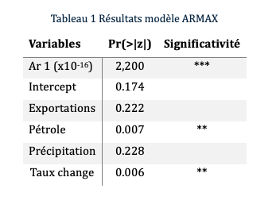

suppressPackageStartupMessages({
library(readxl)
library(ggplot2)
library(plotly)
library(tidyr)
library(dplyr)
library(ggcorrplot)
library(PerformanceAnalytics)
library(trend)
library(seastests)
library(tseries)
library(forecast)
library(tsoutliers)
library(EnvStats)
library(RJDemetra)
library(TSA)
library(lubridate)
library(tsoutliers)
library(leaps)
library(MASS)
library(car)
library(lmtest)
library(BeSS)
library(nlme)
library(here)
})Mémoire
Séries temporelles
R
MCO
ARMAX
SensibiliteÃÅ des prix agricoles face aux chocs climatiques
SeÃÅries temporelles au BreÃÅsil de janvier 2000 aÃÄ deÃÅcembre 2022
Présentation
Cette étude analyse les prix des produits agricoles au Brésil, un acteur clé des enjeux agricoles mondiaux, en utilisant l’indice des prix à la production agricole (IPA) de janvier 2000 à décembre 2022. L’étude a intégré des variables climatiques pour évaluer leur impact, en utilisant des modèles de régression tels que les Moindres Carrés Ordinaires (MCO) et ARMAX. Dans notre approche par les MCO, nous avons rencontré des difficultés telles que l’autocorrélation des résidus et l’hétéroscédasticité. Malgré plusieurs tentatives, le modèle MCO n’a pas pu être validé et nous avons adopté le modèle ARMAX qui s’est avéré plus efficace. Les résultats montrent que le taux de change, le prix du pétrole et l’influence des valeurs passées de l’IPA ont eu un impact statistiquement significatif. Nos recherches révèlent que, bien que les variables climatiques n’aient pas eu un effet notable, la complexité du système agricole suggère qu’une approche globale et uniforme n’est pas adéquate. Ainsi, nous préconisons, tant dans les études que dans l’élaboration des stratégies, l’adoption de mesures localisées qui répondent mieux aux besoins spécifiques des communautés agricoles.
Mots clés : Prix agricoles, Brésil, MCO, ARMAX, R
Sujet d’étude
Le Brésil, l’un des plus grands producteurs agricoles mondiaux, est également riche en biodiversité et ressources environnementales. Toutefois, le pays est marqué par d’importantes disparités économiques et sociales, reflétées dans son secteur agricole qui se divise entre l’agriculture familiale et l’agrobusiness. Depuis 2000, les politiques brésiliennes ont alterné entre progrès et régression. Sous Lula da Silva, des avancées significatives ont été réalisées, tandis que les administrations suivantes ont vu des reculs, notamment avec la suppression de ministères clés et la libéralisation de la politique de réforme agraire. L’administration de Bolsonaro a augmenté les tensions entre développement agricole et conservation environnementale, en particulier avec l’augmentation de la déforestation en Amazonie. En tant que membre des BRICS et du MERCOSUR, le Brésil joue un rôle important dans les discussions internationales. Le traité de libre-échange entre l’UE et le MERCOSUR est un bon exemple de l’importance croissante du pays sur la scène internationale. L’objectif est de comprendre les facteurs qui influencent les prix à la production agricole du pays que beaucoup surnomment « la ferme du monde ».
Présentation des données
Les données s’étendant de janvier 2000 à décembre 2022 avec une fréquence mensuelle, proviennent de trois sources : l’Institut de Recherche Économique Appliquée (IPEA DATA), les Statistiques de l’ONU pour l’alimentation et l’agriculture (FAO STAT), et le Portail de connaissances sur le changement climatique de la Banque mondiale (CCKP). Les variables explicatives incluent les variations de température (°C), les précipitations (mm), le nombre de jours secs consécutifs, le prix du pétrole, le taux de change (BRL/USD), le salaire minimum nominal (SMIC), et les indices des exportations et importations agricoles.
Des statistiques descriptives ont mis en évidence une hausse marquée de l’IPA, particulièrement après 2016.
Sur le plan climatique, les données indiquent des périodes de sécheresse plus longues et des fluctuations de température tendant vers des valeurs maximales. En ce qui concerne les variables économiques, le prix du pétrole a subi de fortes fluctuations au cours des deux dernières décennies, principalement en raison du contexte géopolitique mondial. Le taux de change a connu une dévaluation notable depuis 2019, en réponse à la crise du COVID-19, ce qui a contribué à une augmentation exponentielle des exportations, accentuant une tendance déjà forte depuis 2010. Un prétraitement de nos données a été nécessaire en raison de la présence de valeurs atypiques.
Méthodologie
Pour analyser les variations de l’IPA, nous avons utilisé deux méthodes : MCO et ARMAX. Afin d’éviter les régressions fallacieuses et assurer la validité de nos modèles, nous avons vérifié la stationnarité avec les tests ADF et KPSS.
Les séries temporelles présentant une saisonnalité ont été décomposées afin de corriger les variations saisonnières, permettant de mieux isoler les effets des variables explicatives. Nous avons aussi utilisé les tests de Breusch-Godfrey et Breusch-Pagan pour détecter l’autocorrélation et l’hétéroscédasticité, le test de Kolmogorov-Smirnov pour la normalité des résidus, et le test RESET pour la spécification du modèle, confirmant l’adéquation des modèles et la fiabilité des estimations des coefficients.
Nous avons exploré plusieurs modèles en utilisant l’approche MCO. Les problèmes d’hétéroscédasticité et de spécificité ont été corrigés en adoptant une forme semi-logarithmique. Cependant, malgré diverses tentatives, telles que l’introduction d’une variable temporelle, la correction de la tendance déterministe, et l’ajustement des résidus avec un modèle AR(1), les modèles ont continué de présenter une capacité explicative limitée et des problèmes de conformité aux hypothèses. Nous avons alors opté pour des modèles ARMAX, lesquels intègrent les effets des variables exogènes ainsi que la dynamique interne des séries temporelles.

Le modèle révèle que les valeurs futures de notre série temporelle sont significativement influencées par les valeurs immédiatement antérieures, avec un niveau de significativité de 1%. Par ailleurs, le prix du pétrole est statistiquement significatif au seuil de risque de 5%. Avec un coefficient positif, lorsque les prix du pétrole augmentent, l’indice IPA augmente également. Il en est de même pour le taux de change, cela signifie que lorsque le real brésilien se déprécie, les prix à la production agricole tendent à augmenter.
Concernant les autres variables du modèle, elles ne montrent pas d’impact significatif . Quant à notre variable climatique, la précipitation, elle s’est révélée non significative, indiquant que , dans le cadre de cette étude, les variations des précipitations n’ont pas un impact notable sur l’indice des prix à la production agricole de manière statistiquement mesurable.
Conclusion et discussion
Cette étude nous a montré la complexité du système agricole brésilien et, bien que nos résultats n’aient pas été ceux attendus, cela peut s’expliquer par la manière dont l’agriculture s’adapte aux changements climatiques. Alors que certaines régions voient leur production agricole diminuer en raison de conditions défavorables, d’autres connaissent une augmentation ou délocalisent leur production. Lorsque ces variations régionales sont agrégées au niveau national, les impacts locaux peuvent être masqués, minimisant ainsi les effets perceptibles sur les prix nationaux.
Par ailleurs, les progrès technologiques en agriculture, bien qu’ils puissent améliorer les rendements et la gestion des cultures, introduisent une complexité supplémentaire dans l’évaluation des impacts directs du climat. Les innovations, comme les variétés résistantes à la sécheresse et l’optimisation des intrants, ont renforcé la résilience des cultures face aux aléas climatiques, permettant de maintenir des niveaux de production élevés même dans des conditions difficiles. Cependant, cette intensification pose des défis environnementaux significatifs, tels que l’épuisement des sols et une dépendance accrue aux produits chimiques, qui compliquent l’attribution précise des impacts du changement climatique dans les analyses économiques agricoles.
Il est donc important de mettre en œuvre les avancées technologiques de manière réfléchie pour éviter des conséquences indésirables et de revoir les politiques agricoles pour assurer la durabilité et la sécurité alimentaire dans un climat changeant, en adaptant les pratiques agricoles aux nouvelles réalités climatiques et économiques.
Vous avez la possibilit√© de t√©l√©charger le document ici :) üì• T√©l√©charger le fichier PDF
Présentation du code
Je vous présente ci-dessous, le code utilisé pour mener à bien ce projet, avec les étapes et explications correspondantes.
Librairies
Analyse exploratoire
Chargement de données
Les données de la variable du prix du pétrole ont une fréquence journalière, nous calculons donc la moyenne pour avoir un prix moyen mensuel
petrole <- read_excel(here("data", "donnees_br.xlsx"), sheet = 'prix_petrole')
petrole$date <- as.Date(petrole$date)
# Colonnes pour l'année et le mois
petrole <- petrole %>%
mutate(
year = year(date),
month = month(date)
)
prix_petrole <- petrole %>%
group_by(year, month) %>%
summarise(
prix_moyen = mean(prix, na.rm = TRUE),
.groups = 'drop' # regroupement après le summarise
)
rm(petrole) # supprime pétrole en joursRécupération de l’ensemble de nos variables et remplacement de la variable prix du pétrole en jours, par le prix moyen mensuel
# ensemble de variables
data <- read_excel(here("data", "donnees_br.xlsx"))
data$petrole <- prix_petrole$prix_moyen Valeurs manquantes et format des données
sum(is.na(data)) # vérification des valeurs manquants[1] 48data <- drop_na(data)
dim(data)[1] 276 10str(data) # vérification formattibble [276 × 10] (S3: tbl_df/tbl/data.frame)
$ date : chr [1:276] "2000.01" "2000.02" "2000.03" "2000.04" ...
$ IPA : num [1:276] 199 196 193 192 193 ...
$ CDD : num [1:276] 2.86 2.94 3.03 4.61 12.14 ...
$ precipitation: num [1:276] 255 241 247 206 124 ...
$ temperature : num [1:276] 0.558 0.226 0.159 0.607 0.548 ...
$ exportations : num [1:276] 7.5 8.4 11.7 20.2 23.2 22.7 22.1 27.4 16.5 16 ...
$ importations : num [1:276] 81.8 113 117.5 116.5 128.4 ...
$ SMIC : num [1:276] 136 136 136 151 151 151 151 151 151 151 ...
$ taux_change : num [1:276] 1.8 1.78 1.74 1.77 1.83 ...
$ petrole : num [1:276] 25.5 27.8 27.5 22.8 27.7 ...# On transforme la variable smic en numérique
data$SMIC <- as.numeric(data$SMIC)
# Conversion la colonne de date en type yearmon
data$date <- as.yearmon(data$date, "%Y.%m")Les données climatiques sont complètes jusqu’au mois de décembre 2022, on conserve donc l’ensemble des données du mois de janvier 2000 à décembre 2022. Au total nous avons 276 observations pour 13 variables.
Statistiques descriptives
summary(data) date IPA CDD precipitation
Min. :2000 Min. : 191.6 Min. : 2.380 Min. : 33.16
1st Qu.:2006 1st Qu.: 401.5 1st Qu.: 4.728 1st Qu.: 72.14
Median :2011 Median : 649.3 Median : 8.440 Median :148.39
Mean :2011 Mean : 748.4 Mean :10.107 Mean :147.15
3rd Qu.:2017 3rd Qu.: 944.3 3rd Qu.:15.315 3rd Qu.:212.66
Max. :2023 Max. :2133.2 Max. :23.340 Max. :288.10
temperature exportations importations SMIC
Min. :-0.0920 Min. : 7.50 Min. : 50.80 Min. : 136.0
1st Qu.: 0.7768 1st Qu.: 31.70 1st Qu.: 81.00 1st Qu.: 300.0
Median : 1.0695 Median : 48.40 Median : 92.60 Median : 545.0
Mean : 1.0869 Mean : 59.26 Mean : 93.65 Mean : 602.5
3rd Qu.: 1.3250 3rd Qu.: 82.65 3rd Qu.:107.47 3rd Qu.: 937.0
Max. : 2.4310 Max. :194.10 Max. :149.80 Max. :1212.0
taux_change petrole
Min. :1.564 Min. : 18.47
1st Qu.:2.002 1st Qu.: 42.53
Median :2.473 Median : 62.81
Mean :2.901 Mean : 65.40
3rd Qu.:3.521 3rd Qu.: 85.50
Max. :5.651 Max. :134.03 Boxplot
data|>
pivot_longer(
cols = where(is.numeric)
) |>
ggplot() +
aes(y = value) +
facet_wrap(~ name, scales = "free_y") +
geom_boxplot() +
theme_light()Graphiques des séries
data$date <- as.Date(as.yearmon(data$date))
# Boucle sur chaque colonne sauf la date pour créer des graphiques
for (column_name in names(data)[-1]) {
p <- ggplot(data, aes(x = date, y = .data[[column_name]], colour = .data[[column_name]])) +
geom_line() +
scale_color_gradient(low = "blue", high = "red") +
labs(title = paste("Série temporelle: ", column_name),
x = "Date",
y = column_name,
colour = "Intensité") +
theme_minimal()
print(p)
}
print(p)Convertir en time series
# Boucle pour convertir chaque colonne en ts et les stocker comme variables séparées
for(column_name in names(data)[-1]) { # Exclure la colonne de date
# Créer une série temporelle pour la colonne actuelle
ts_data <- ts(data[[column_name]], start = c(2000, 1), frequency = 12)
# variable dans l'environnement global avec un nom dynamique
assign(paste0("ts_", column_name), ts_data)
}Points atypiques ou Outliers
(attention cela peut prendre quelques minutes, possibilité de charger le fichier après correction data.adj (pour données ajustées))
#|warning: false
#|message: false
# on utilise tso() pour chercher les outliers
fit_CDD <- tso(ts_CDD)
fit_IPA <- tso(ts_IPA)Warning in locate.outliers.iloop(resid = resid, pars = pars, cval = cval, :
stopped when 'maxit.iloop' was reachedWarning in locate.outliers.oloop(y = y, fit = fit, types = types, cval = cval,
: stopped when 'maxit.oloop = 4' was reachedfit_importations <- tso(ts_importations)
fit_exportations <- tso(ts_exportations)Warning in locate.outliers.iloop(resid = resid, pars = pars, cval = cval, :
stopped when 'maxit.iloop' was reachedfit_petrole <- tso(ts_petrole)
fit_taux_change <- tso(ts_taux_change)
fit_SMIC <- tso(ts_SMIC)Warning in locate.outliers.iloop(resid = resid, pars = pars, cval = cval, :
stopped when 'maxit.iloop' was reached
Warning in locate.outliers.iloop(resid = resid, pars = pars, cval = cval, :
stopped when 'maxit.oloop = 4' was reachedfit_precipitation <- tso(ts_precipitation)
fit_temperature <- tso(ts_temperature)
# pour regarder les points atypiques de chaque serie
fit_CDD # sans outliers Series:
ARIMA(0,0,2)(2,1,2)[12]
Coefficients:
ma1 ma2 sar1 sar2 sma1 sma2
0.4183 0.2297 -0.8083 -0.0933 -0.0277 -0.6980
s.e. 0.0635 0.0596 0.1733 0.0830 0.1735 0.1586
sigma^2 = 2.206: log likelihood = -484.75
AIC=983.5 AICc=983.94 BIC=1008.53
No outliers were detected.fit_IPA Series: ts_IPA
Regression with ARIMA(1,1,0) errors
Coefficients:
ar1 LS252 TC258 TC263
0.6912 -149.6890 -77.9185 -42.7527
s.e. 0.0435 13.6418 11.6972 11.6982
sigma^2 = 275.1: log likelihood = -1160.87
AIC=2331.73 AICc=2331.96 BIC=2349.82
Outliers:
type ind time coefhat tstat
1 LS 252 2020:12 -149.69 -10.973
2 TC 258 2021:06 -77.92 -6.661
3 TC 263 2021:11 -42.75 -3.655fit_importations Series: ts_importations
Regression with ARIMA(1,1,2)(1,0,0)[12] errors
Coefficients:
ar1 ma1 ma2 sar1 LS47 AO98 LS195 LS206
0.0432 -0.7165 -0.1532 0.2900 -29.4529 47.8804 40.0092 -30.3560
s.e. 0.3300 0.3263 0.2703 0.0597 7.4462 12.0018 7.3329 7.3662
sigma^2 = 175.7: log likelihood = -1097.94
AIC=2213.88 AICc=2214.56 BIC=2246.43
Outliers:
type ind time coefhat tstat
1 LS 47 2003:11 -29.45 -3.955
2 AO 98 2008:02 47.88 3.989
3 LS 195 2016:03 40.01 5.456
4 LS 206 2017:02 -30.36 -4.121fit_exportations Series: ts_exportations
Regression with ARIMA(1,0,0)(0,1,1)[12] errors
Coefficients:
ar1 sma1 AO33 AO114 LS185 AO254
0.7625 -0.6238 25.6306 31.0681 26.0407 -27.9435
s.e. 0.0426 0.0510 6.9851 6.8995 6.8729 7.1521
sigma^2 = 94.47: log likelihood = -975.31
AIC=1964.61 AICc=1965.05 BIC=1989.65
Outliers:
type ind time coefhat tstat
1 AO 33 2002:09 25.63 3.669
2 AO 114 2009:06 31.07 4.503
3 LS 185 2015:05 26.04 3.789
4 AO 254 2021:02 -27.94 -3.907fit_petrole # sans outliersSeries:
ARIMA(1,1,0)
Coefficients:
ar1
0.3497
s.e. 0.0567
sigma^2 = 32.51: log likelihood = -868.48
AIC=1740.95 AICc=1741 BIC=1748.19
No outliers were detected.fit_taux_change Series: ts_taux_change
Regression with ARIMA(0,1,1) errors
Coefficients:
ma1 AO34
0.3165 0.3361
s.e. 0.0573 0.0697
sigma^2 = 0.0143: log likelihood = 194.75
AIC=-383.5 AICc=-383.41 BIC=-372.65
Outliers:
type ind time coefhat tstat
1 AO 34 2002:10 0.3361 4.824fit_SMIC Series: ts_SMIC
Regression with ARIMA(0,0,5)(0,0,2)[12] errors
Coefficients:
ma1 ma2 ma3 ma4 ma5 sma1 sma2 intercept
0.8636 0.6544 0.5548 0.3908 0.1828 -0.9308 0.3063 144.4274
s.e. 0.0632 0.0802 0.0792 0.0747 0.0548 0.0625 0.0594 4.3551
LS16 LS40 LS65 LS88 AO121 LS122 LS145 LS157
44.9926 61.3801 71.3287 94.4402 76.0256 120.9066 88.0599 44.6969
s.e. 5.7660 4.2806 3.8698 3.8999 5.0530 4.4605 8.0303 10.7124
LS169 LS193 AO229 LS230 LS253 LS265
77.6692 177.1326 95.2608 104.2519 74.4118 107.2180
s.e. 7.9620 4.3219 5.1179 4.4431 8.0232 11.0379
sigma^2 = 69.78: log likelihood = -972.05
AIC=1990.11 AICc=1994.49 BIC=2073.38
Outliers:
type ind time coefhat tstat
1 LS 16 2001:04 44.99 7.803
2 LS 40 2003:04 61.38 14.339
3 LS 65 2005:05 71.33 18.432
4 LS 88 2007:04 94.44 24.216
5 AO 121 2010:01 76.03 15.046
6 LS 122 2010:02 120.91 27.106
7 LS 145 2012:01 88.06 10.966
8 LS 157 2013:01 44.70 4.172
9 LS 169 2014:01 77.67 9.755
10 LS 193 2016:01 177.13 40.985
11 AO 229 2019:01 95.26 18.613
12 LS 230 2019:02 104.25 23.464
13 LS 253 2021:01 74.41 9.275
14 LS 265 2022:01 107.22 9.714fit_precipitation Series: ts_precipitation
Regression with ARIMA(0,0,1)(2,1,0)[12] errors
Coefficients:
ma1 sar1 sar2 TC49 AO193
0.2476 -0.6126 -0.3736 59.2558 86.5774
s.e. 0.0571 0.0580 0.0589 14.5850 18.3329
sigma^2 = 424.8: log likelihood = -1174.07
AIC=2360.14 AICc=2360.46 BIC=2381.59
Outliers:
type ind time coefhat tstat
1 TC 49 2004:01 59.26 4.063
2 AO 193 2016:01 86.58 4.723fit_temperature # sans outliersSeries:
ARIMA(0,1,2)
Coefficients:
ma1 ma2
-0.6600 -0.1641
s.e. 0.0588 0.0651
sigma^2 = 0.1426: log likelihood = -121.87
AIC=249.74 AICc=249.83 BIC=260.59
No outliers were detected.# Graphique
plot(fit_IPA)plot(fit_SMIC)
plot(fit_precipitation)plot(fit_taux_change)plot(fit_exportations)plot(fit_importations)plot(fit_CDD )'x' does not contain outliers to displayNULL# recuperation des séries ajustés
adj_IPA <- fit_IPA$yadj
adj_CDD <- fit_CDD$yadj
adj_importations <- fit_importations$yadj
adj_exportations <- fit_exportations$yadj
adj_petrole <- fit_petrole$yadj
adj_taux_change <- fit_taux_change$yadj
adj_SMIC <- fit_SMIC$yadj
adj_precipitation <- fit_precipitation$yadj
adj_temperature <- fit_temperature$yadj Enregistrement données ajustés
# création d'un dataframe où les séries ajustés seront stockés pour êtres réutilises si nécessaire plus tard
data_adj <- data.frame(
Date = data$date,
IPA = adj_IPA,
CDD = adj_CDD,
importations = adj_importations,
exportations = adj_exportations,
petrole = adj_petrole,
taux_change = adj_taux_change,
SMIC = adj_SMIC,
precipitation = adj_precipitation,
temperature = adj_temperature
)
#write.csv(data_adj, "data_adj.csv", row.names = FALSE)Récupération base de données ajustées
#data_adj <- read.csv("/Users/Isabel/Desktop/memoire3/data_adj.csv")
data_adj$Date <- as.Date(data_adj$Date)
# variables
variables <- c("IPA", "CDD", "precipitation", "temperature", "exportations", "importations", "taux_change", "SMIC", "petrole")Skewness, kurtosis
skew_kurt_df <- data.frame(
Variable = variables,
# Calcul de skewness
Skewness = sapply(data_adj[variables], PerformanceAnalytics::skewness),
# Calcul de kurtosis
Kurtosis = sapply(data_adj[variables], PerformanceAnalytics::kurtosis)
)
skew_kurt_df Variable Skewness Kurtosis
IPA IPA 1.587451131 2.02938496
CDD CDD 0.515154009 -1.09215980
precipitation precipitation 0.003335255 -1.39981138
temperature temperature 0.354093594 0.24637826
exportations exportations 0.991190627 0.83599348
importations importations -0.035585053 -0.48953698
taux_change taux_change 0.982023281 -0.04678673
SMIC SMIC 0.038077541 -0.44421037
petrole petrole 0.340169157 -0.94096896Test de normalité
#vérification de la normalité des variables
lapply(data_adj[variables], shapiro.test)$IPA
Shapiro-Wilk normality test
data: X[[i]]
W = 0.81162, p-value < 2.2e-16
$CDD
Shapiro-Wilk normality test
data: X[[i]]
W = 0.90346, p-value = 2.662e-12
$precipitation
Shapiro-Wilk normality test
data: X[[i]]
W = 0.92737, p-value = 2.312e-10
$temperature
Shapiro-Wilk normality test
data: X[[i]]
W = 0.98853, p-value = 0.02765
$exportations
Shapiro-Wilk normality test
data: X[[i]]
W = 0.93141, p-value = 5.389e-10
$importations
Shapiro-Wilk normality test
data: X[[i]]
W = 0.99312, p-value = 0.2348
$taux_change
Shapiro-Wilk normality test
data: X[[i]]
W = 0.87498, p-value = 3.167e-14
$SMIC
Shapiro-Wilk normality test
data: X[[i]]
W = 0.97073, p-value = 2.005e-05
$petrole
Shapiro-Wilk normality test
data: X[[i]]
W = 0.94924, p-value = 3.449e-08Corrélation
#|warning: false
#|message: false
# Matrice de corrélation
cor_matrix <- cor(data_adj[, variables], use = "complete.obs", method = "spearman")
cor_matrix IPA CDD precipitation temperature exportations
IPA 1.00000000 0.07576372 -0.04386296 0.37647867 0.64924172
CDD 0.07576372 1.00000000 -0.96428022 0.32220175 0.39372744
precipitation -0.04386296 -0.96428022 1.00000000 -0.33938317 -0.35647340
temperature 0.37647867 0.32220175 -0.33938317 1.00000000 0.28936878
exportations 0.64924172 0.39372744 -0.35647340 0.28936878 1.00000000
importations 0.53493377 -0.11595776 0.14735573 0.09049610 0.42171195
taux_change 0.60748523 0.07445183 -0.06679673 0.36570691 0.32702233
SMIC 0.01955579 -0.02748573 0.02980255 0.00564068 0.04615657
petrole 0.42210699 0.08940170 -0.05840727 -0.02391271 0.44837226
importations taux_change SMIC petrole
IPA 0.534933773 0.60748523 0.019555787 0.42210699
CDD -0.115957758 0.07445183 -0.027485733 0.08940170
precipitation 0.147355729 -0.06679673 0.029802545 -0.05840727
temperature 0.090496098 0.36570691 0.005640680 -0.02391271
exportations 0.421711949 0.32702233 0.046156570 0.44837226
importations 1.000000000 0.06006558 -0.008959876 0.50385277
taux_change 0.060065584 1.00000000 0.098030177 -0.30572061
SMIC -0.008959876 0.09803018 1.000000000 -0.08122171
petrole 0.503852770 -0.30572061 -0.081221712 1.00000000# Visualiser la matrice de corrélation
ggcorrplot(cor_matrix,
hc.order = TRUE, type = "lower",
lab = TRUE,
ggtheme = ggplot2::theme_gray,
colors = c("blue", "white", "red"))
# spearman correlation test
#chart.Correlation(data_adj[variables], histogram=TRUE, pch=19,method = c("spearman"))Le calcul de la corrélation de Spearman est recommandé lorsque les variables ne suivent pas une loi normalece type de corrélation est dit robuste car il ne dépend pas de la distribution des données. (cours M.Travers)
Composants
Nous commençons cette partie par deux tests : le premier est le test de tendance monotone de Mann-Kendall,et le deuxième est le test de saisonalité
Test de tendance Mann-Kendall
# Test de tenance pour chaque variable
lapply(data_adj[variables], function(x) {
mk.test(x, alternative = "greater")
})$IPA
Mann-Kendall trend test
data: x
z = 22.407, n = 276, p-value < 2.2e-16
alternative hypothesis: true S is greater than 0
sample estimates:
S varS tau
3.434000e+04 2.348683e+06 9.048748e-01
$CDD
Mann-Kendall trend test
data: x
z = 1.4414, n = 276, p-value = 0.07474
alternative hypothesis: true S is greater than 0
sample estimates:
S varS tau
2.210000e+03 2.348661e+06 5.825141e-02
$precipitation
Mann-Kendall trend test
data: x
z = -0.87893, n = 276, p-value = 0.8103
alternative hypothesis: true S is greater than 0
sample estimates:
S varS tau
-1.348000e+03 2.348683e+06 -3.552042e-02
$temperature
Mann-Kendall trend test
data: x
z = 6.3914, n = 276, p-value = 8.22e-11
alternative hypothesis: true S is greater than 0
sample estimates:
S varS tau
9.796000e+03 2.348657e+06 2.582176e-01
$exportations
Mann-Kendall trend test
data: x
z = 12.289, n = 276, p-value < 2.2e-16
alternative hypothesis: true S is greater than 0
sample estimates:
S varS tau
1.883500e+04 2.348658e+06 4.964745e-01
$importations
Mann-Kendall trend test
data: x
z = 9.3009, n = 276, p-value < 2.2e-16
alternative hypothesis: true S is greater than 0
sample estimates:
S varS tau
1.425500e+04 2.348659e+06 3.757397e-01
$taux_change
Mann-Kendall trend test
data: x
z = 10.163, n = 276, p-value < 2.2e-16
alternative hypothesis: true S is greater than 0
sample estimates:
S varS tau
1.557600e+04 2.348681e+06 4.104456e-01
$SMIC
Mann-Kendall trend test
data: x
z = 0.57934, n = 276, p-value = 0.2812
alternative hypothesis: true S is greater than 0
sample estimates:
S varS tau
8.880000e+02 2.344153e+06 2.385489e-02
$petrole
Mann-Kendall trend test
data: x
z = 8.2693, n = 276, p-value < 2.2e-16
alternative hypothesis: true S is greater than 0
sample estimates:
S varS tau
1.267400e+04 2.348683e+06 3.339657e-01 Test Saisonnière
# On transforme en format tsv
ts_data <- ts(data_adj[, 2:10], frequency = 12, start = c(2000, 1))
## Verfication de la saisonnalité
test_saison <- vector("logical", ncol(ts_data)) # vecteur pour stocker les résultats
names(test_saison) <- colnames(ts_data) # nomme les résultats selon les variables
for (i in 1:ncol(ts_data)) {
test_saison[i] <- isSeasonal(ts_data[, i], test = "wo")
}
test_saison IPA CDD importations exportations petrole
FALSE TRUE TRUE TRUE FALSE
taux_change SMIC precipitation temperature
FALSE FALSE TRUE TRUE # Deuxième test Seasonal dummies
for (i in 1:ncol(ts_data)) {
nom_var <- colnames(ts_data)[i]
result <- seasdum(ts_data[, i])
cat("\nTest Seasonal dummies: ", nom_var, ":\n")
print(result)
}
Test Seasonal dummies: IPA :
Test used: SeasonalDummies
Test statistic: 1.27
P-value: 0.2414814
Test Seasonal dummies: CDD :
Test used: SeasonalDummies
Test statistic: 283.33
P-value: 0
Test Seasonal dummies: importations :
Test used: SeasonalDummies
Test statistic: 6.31
P-value: 2.993919e-09
Test Seasonal dummies: exportations :
Test used: SeasonalDummies
Test statistic: 23.43
P-value: 0
Test Seasonal dummies: petrole :
Test used: SeasonalDummies
Test statistic: 1.06
P-value: 0.390488
Test Seasonal dummies: taux_change :
Test used: SeasonalDummies
Test statistic: 1.31
P-value: 0.218587
Test Seasonal dummies: SMIC :
Test used: SeasonalDummies
Test statistic: 0.06
P-value: 0.999995
Test Seasonal dummies: precipitation :
Test used: SeasonalDummies
Test statistic: 351.69
P-value: 0
Test Seasonal dummies: temperature :
Test used: SeasonalDummies
Test statistic: 4.35
P-value: 5.416069e-06Les variables pressentant une saisonnalité d’après les tests sont CDD, importations, Exportations, Précipitation et température
Le code ci-dessous et similaire à celui que nous avons fait precedement pour transformer les variables en time series, on a besoin si nous téléchargeons le fichier data.adj
# Boucle pour convertir chaque colonne en ts et les stocker comme variables séparées
for(column_name in names(data_adj)[-1]) { # Exclure la colonne de date
# Créer une série temporelle pour la colonne actuelle
ts_list <- ts(data_adj[[column_name]], start = c(2000, 1), frequency = 12)
# variable dans l'environnement global avec un nom dynamique
assign(paste0("ts_", column_name), ts_list)
}Correlogramme des variables saisonnières
par(mfrow=c(2,2))
# ACF pour les variables presentant une saisonalité
# CDD
acf(ts_CDD, main = "ACF CDD sur la série en niveau")
acf(diff(ts_CDD,differences = 1), main = "ACF CDD sur la série en différence premiére")
# Précipitation
acf(ts_precipitation, main = "ACF Precipitations sur la série en niveau")
acf(diff(ts_precipitation,differences = 1), main = "ACF Precipitations sur la série en différence premiére")# Témperature
acf(ts_temperature, main = "ACF Témperature sur la série en niveau ")
acf(diff(ts_temperature,differences = 1), main = "ACF Témperature sur la série en différence premiére")
# Importations
acf(ts_importations, main = "ACF Importations sur la série en niveau")
acf(diff(ts_importations, differences = 1),main = "ACF Importations sur la série en différence premiére")# Exportations
acf(ts_exportations, main = "ACF Exportations sur la série en niveau")
acf(diff(ts_exportations,differences = 1), main = "ACF Exportations sur la série en différence premiére")Périodogramme
# Périodogramme ou filtre spectra pour les sérires presentant une saisonalité
# CDD
periodogram(ts_CDD, main = "Périodogramme CDD sur la série en niveau")periodogram(diff(ts_CDD,differences = 1), main = "Périodogramme CDD sur la série en différence premiére")# Precipitations
periodogram(ts_precipitation, main = "Périodogramme Precipitations sur la série en niveau")periodogram(diff(ts_precipitation,differences = 1), main = "Périodogramme Precipitations sur la série en différence premiére")# Temperature
periodogram(ts_temperature, main = "Périodogramme Témperature sur la série en niveau ")periodogram(diff(ts_temperature,differences = 1), main = "Périodogramme Témperature sur la série en différence premiére")# Importations
periodogram(ts_importations, main = "Périodogramme Importations sur la série en niveau")periodogram(diff(ts_importations, differences = 1),main = "Périodogramme Importations sur la série en différence premiére")# Exportations
periodogram(ts_exportations, main = "Périodogramme Exportations sur la série en niveau")periodogram(diff(ts_exportations,differences = 1), main = "Périodogramme Exportations sur la série en différence premiére")par(mfrow=c(1,2))
# Boxplots pour les variables climatiques avec les cycles correspondants à chaque série
boxplot(ts_CDD ~ cycle(ts_CDD), main = "Boîte à moustaches des CDD par cycle", xlab = "Cycle", ylab = "CDD en jours")
boxplot(ts_precipitation ~ cycle(ts_precipitation), main = "Boîte à moustaches des précipitations par cycle", xlab = "Cycle", ylab = "Précipitations en mm")boxplot(ts_temperature ~ cycle(ts_temperature), main = "Boîte à moustaches de la température par cycle", xlab = "Cycle", ylab = "Variations de température")
# Variables export - importation
boxplot(ts_importations ~ cycle(ts_importations), main = "Boîte à moustaches des importations par cycle", xlab = "Cycle", ylab = "Valeurs des importations")boxplot(ts_exportations ~ cycle(ts_exportations), main = "Boîte à moustaches des exportations par cycle", xlab = "Cycle", ylab = "Valeurs des exportations")Test ADF
#|warning: false
#|message: false
# test ADF
lapply(data_adj[variables], function(x) {
adf.test(x, alternative = "stationary")
})Warning in adf.test(x, alternative = "stationary"): p-value smaller than
printed p-value
Warning in adf.test(x, alternative = "stationary"): p-value smaller than
printed p-value
Warning in adf.test(x, alternative = "stationary"): p-value smaller than
printed p-value
Warning in adf.test(x, alternative = "stationary"): p-value smaller than
printed p-value
Warning in adf.test(x, alternative = "stationary"): p-value smaller than
printed p-value$IPA
Augmented Dickey-Fuller Test
data: x
Dickey-Fuller = -2.0623, Lag order = 6, p-value = 0.5498
alternative hypothesis: stationary
$CDD
Augmented Dickey-Fuller Test
data: x
Dickey-Fuller = -15.661, Lag order = 6, p-value = 0.01
alternative hypothesis: stationary
$precipitation
Augmented Dickey-Fuller Test
data: x
Dickey-Fuller = -12.168, Lag order = 6, p-value = 0.01
alternative hypothesis: stationary
$temperature
Augmented Dickey-Fuller Test
data: x
Dickey-Fuller = -4.9028, Lag order = 6, p-value = 0.01
alternative hypothesis: stationary
$exportations
Augmented Dickey-Fuller Test
data: x
Dickey-Fuller = -8.6625, Lag order = 6, p-value = 0.01
alternative hypothesis: stationary
$importations
Augmented Dickey-Fuller Test
data: x
Dickey-Fuller = -3.7022, Lag order = 6, p-value = 0.02434
alternative hypothesis: stationary
$taux_change
Augmented Dickey-Fuller Test
data: x
Dickey-Fuller = -1.4862, Lag order = 6, p-value = 0.7925
alternative hypothesis: stationary
$SMIC
Augmented Dickey-Fuller Test
data: x
Dickey-Fuller = -6.0839, Lag order = 6, p-value = 0.01
alternative hypothesis: stationary
$petrole
Augmented Dickey-Fuller Test
data: x
Dickey-Fuller = -2.178, Lag order = 6, p-value = 0.5011
alternative hypothesis: stationaryGraphiques des variables non stationnaires Test ADF
# Graphique pour la série IPA
ggplot(data = data_adj, aes(x = Date, y = IPA)) +
geom_line(color = "blue", size = 0.5) +
stat_smooth(color = "red", fill = "red", method = "loess", show.legend = TRUE, size = 0.2) +
ggtitle("Analyse de la tendance de l'IPA-DI sur la période 01/2000 - 12/2022") +
xlab("Date") +
ylab("IPA Value") Warning: Using `size` aesthetic for lines was deprecated in ggplot2 3.4.0.
ℹ Please use `linewidth` instead.Don't know how to automatically pick scale for object of type <ts>. Defaulting
to continuous.
`geom_smooth()` using formula = 'y ~ x'# Graphique pour la série petrole
ggplot(data = data_adj, aes(x = Date, y = petrole)) +
geom_line(color = "blue", size = 0.5) +
stat_smooth(color = "red", fill = "red", method = "loess", show.legend = TRUE, size = 0.2) +
ggtitle("Analyse de la tendance du prix du pétrole sur la période 01/2000 - 12/2022") +
xlab("Date") +
ylab("Petrole Value") Don't know how to automatically pick scale for object of type <ts>. Defaulting
to continuous.
`geom_smooth()` using formula = 'y ~ x'
# Graphique pour la série taux de change
ggplot(data = data_adj, aes(x = Date, y = taux_change)) +
geom_line(color = "blue", size = 0.5) +
stat_smooth(color = "red", fill = "red", method = "loess", show.legend = TRUE, size = 0.2) +
ggtitle("Analyse de la tendance du taux de change sur la période 01/2000 - 12/2022") +
xlab("Date") +
ylab("Taux de change") Don't know how to automatically pick scale for object of type <ts>. Defaulting
to continuous.
`geom_smooth()` using formula = 'y ~ x'La fonction stat_smooth(method = “loess”) ajoute une courbe de lissage aux données, utilisant la méthode LOESS (Locally Estimated Scatterplot Smoothing). Cette courbe est utile pour visualiser une tendance centrale plus lisse dans les données, ce qui peut être particulièrement bénéfique dans les cas où les données sont bruyantes ou volatiles
Test KPSS
#|warning: false
#|message: false
## Trend
for (i in 1:ncol(ts_data)) {
nom_var <- colnames(ts_data)[i]
result <- kpss.test(ts_data[, i], null = "Trend")
cat("\nTest KPSS: ", nom_var, ":\n")
print(result)
}Warning in kpss.test(ts_data[, i], null = "Trend"): p-value smaller than
printed p-value
Test KPSS: IPA :
KPSS Test for Trend Stationarity
data: ts_data[, i]
KPSS Trend = 0.59792, Truncation lag parameter = 5, p-value = 0.01Warning in kpss.test(ts_data[, i], null = "Trend"): p-value greater than
printed p-value
Test KPSS: CDD :
KPSS Test for Trend Stationarity
data: ts_data[, i]
KPSS Trend = 0.0099421, Truncation lag parameter = 5, p-value = 0.1Warning in kpss.test(ts_data[, i], null = "Trend"): p-value smaller than
printed p-value
Test KPSS: importations :
KPSS Test for Trend Stationarity
data: ts_data[, i]
KPSS Trend = 0.37607, Truncation lag parameter = 5, p-value = 0.01Warning in kpss.test(ts_data[, i], null = "Trend"): p-value greater than
printed p-value
Test KPSS: exportations :
KPSS Test for Trend Stationarity
data: ts_data[, i]
KPSS Trend = 0.034185, Truncation lag parameter = 5, p-value = 0.1Warning in kpss.test(ts_data[, i], null = "Trend"): p-value smaller than
printed p-value
Test KPSS: petrole :
KPSS Test for Trend Stationarity
data: ts_data[, i]
KPSS Trend = 0.63433, Truncation lag parameter = 5, p-value = 0.01Warning in kpss.test(ts_data[, i], null = "Trend"): p-value smaller than
printed p-value
Test KPSS: taux_change :
KPSS Test for Trend Stationarity
data: ts_data[, i]
KPSS Trend = 0.94899, Truncation lag parameter = 5, p-value = 0.01Warning in kpss.test(ts_data[, i], null = "Trend"): p-value greater than
printed p-value
Test KPSS: SMIC :
KPSS Test for Trend Stationarity
data: ts_data[, i]
KPSS Trend = 0.018996, Truncation lag parameter = 5, p-value = 0.1Warning in kpss.test(ts_data[, i], null = "Trend"): p-value greater than
printed p-value
Test KPSS: precipitation :
KPSS Test for Trend Stationarity
data: ts_data[, i]
KPSS Trend = 0.010157, Truncation lag parameter = 5, p-value = 0.1
Test KPSS: temperature :
KPSS Test for Trend Stationarity
data: ts_data[, i]
KPSS Trend = 0.13529, Truncation lag parameter = 5, p-value = 0.06984## Level
for (i in 1:ncol(ts_data)) {
nom_var <- colnames(ts_data)[i]
result <- kpss.test(ts_data[, i], null = "Level")
cat("\nTest KPSS: ", nom_var, ":\n")
print(result)
}Warning in kpss.test(ts_data[, i], null = "Level"): p-value smaller than
printed p-value
Test KPSS: IPA :
KPSS Test for Level Stationarity
data: ts_data[, i]
KPSS Level = 3.5331, Truncation lag parameter = 5, p-value = 0.01Warning in kpss.test(ts_data[, i], null = "Level"): p-value greater than
printed p-value
Test KPSS: CDD :
KPSS Test for Level Stationarity
data: ts_data[, i]
KPSS Level = 0.089483, Truncation lag parameter = 5, p-value = 0.1Warning in kpss.test(ts_data[, i], null = "Level"): p-value smaller than
printed p-value
Test KPSS: importations :
KPSS Test for Level Stationarity
data: ts_data[, i]
KPSS Level = 2.666, Truncation lag parameter = 5, p-value = 0.01Warning in kpss.test(ts_data[, i], null = "Level"): p-value smaller than
printed p-value
Test KPSS: exportations :
KPSS Test for Level Stationarity
data: ts_data[, i]
KPSS Level = 3.1023, Truncation lag parameter = 5, p-value = 0.01Warning in kpss.test(ts_data[, i], null = "Level"): p-value smaller than
printed p-value
Test KPSS: petrole :
KPSS Test for Level Stationarity
data: ts_data[, i]
KPSS Level = 1.2759, Truncation lag parameter = 5, p-value = 0.01Warning in kpss.test(ts_data[, i], null = "Level"): p-value smaller than
printed p-value
Test KPSS: taux_change :
KPSS Test for Level Stationarity
data: ts_data[, i]
KPSS Level = 2.6251, Truncation lag parameter = 5, p-value = 0.01Warning in kpss.test(ts_data[, i], null = "Level"): p-value greater than
printed p-value
Test KPSS: SMIC :
KPSS Test for Level Stationarity
data: ts_data[, i]
KPSS Level = 0.020247, Truncation lag parameter = 5, p-value = 0.1Warning in kpss.test(ts_data[, i], null = "Level"): p-value greater than
printed p-value
Test KPSS: precipitation :
KPSS Test for Level Stationarity
data: ts_data[, i]
KPSS Level = 0.030274, Truncation lag parameter = 5, p-value = 0.1Warning in kpss.test(ts_data[, i], null = "Level"): p-value smaller than
printed p-value
Test KPSS: temperature :
KPSS Test for Level Stationarity
data: ts_data[, i]
KPSS Level = 1.7517, Truncation lag parameter = 5, p-value = 0.01Correction
Nous allons maintenant déterminer le type de schéma des séries, multiplicatif ou addif
# Approche Graphique
plot(ts_CDD)plot(ts_precipitation)plot(ts_temperature)plot(ts_importations)plot(ts_exportations)# Test log-level
regx13_CDD <- regarima_x13(ts_CDD, spec ="RG5c")
s_transform(regx13_CDD) tfunction adjust aicdiff
Auto None -2regx13_precipitation <- regarima_x13(ts_precipitation, spec ="RG5c")
s_transform(regx13_precipitation) tfunction adjust aicdiff
Auto None -2regx13_temperature <- regarima_x13(ts_temperature, spec ="RG5c")
s_transform(regx13_temperature) tfunction adjust aicdiff
Auto None -2regx13_importations <- regarima_x13(ts_importations, spec ="RG5c")
s_transform(regx13_importations) tfunction adjust aicdiff
Auto None -2regx13_exportations <- regarima_x13(ts_exportations, spec ="RG5c")
s_transform(regx13_exportations) tfunction adjust aicdiff
Auto None -2Ce test est spécifiquement conçu pour décider si une transformation logarithmique des données est appropriée
Décomposition
Utilisation de decompose pour une décomposition additive
# Décomposition
decom_CDD <- decompose(ts_CDD, type="additive")
decom_precipitations<- decompose(ts_precipitation, type="additive")
decom_temperature <- decompose(ts_temperature, type="additive")
decom_importations <- decompose(ts_importations, type="additive")
decom_importations <- decompose(ts_importations, type="additive")
decom_exportations <- decompose(ts_exportations, type = "additive")
# Plot
plot(decom_CDD)plot(decom_temperature)plot(decom_precipitations)plot(decom_importations)plot(decom_exportations)Chacune de nos variables saisonnières est décomposé en ‘trend’, ‘seasonl’, ‘random’
Désaisonalitation
CDD
CDD_deseason <- ts_CDD - decom_CDD$seasonal
cdd <- ts.intersect(ts_CDD, CDD_deseason)
# Graphique
plot.ts(cdd,
plot.type = "single",
col = c("red", "blue"),
main = "CDD série originale (rouge) et désaisonnalisée (bleu)",
xlab = "Période",
ylab= "Nombre de jours")Température
temperature_deseason <- ts_temperature - decom_temperature$seasonal
temperature <- ts.intersect(ts_temperature, temperature_deseason)
# Graphique
plot.ts(temperature,
plot.type = "single",
col = c("red", "blue"),
main = "Témperature série originale (rouge) et désaisonnalisée (bleu)",
xlab = "Période",
ylab= "Variation de la témperature")Précipitations
precipitations_deseason <- ts_precipitation - decom_precipitations$seasonal
precipitations <- ts.intersect(ts_precipitation, precipitations_deseason)
# Graphique
plot.ts(precipitations,
plot.type = "single",
col = c("red", "blue"),
main = "Précipitations série originale (rouge) et désaisonnalisée (bleu)",
xlab = "Période",
ylab= "Précipations en mm")Exportation
exportations_deseason <- ts_exportations - decom_exportations$seasonal
exportations <- ts.intersect(ts_exportations, exportations_deseason)
# Graphique
plot.ts(exportations,
plot.type = "single",
col = c("red", "blue"),
main = "Exportations série originale (rouge) et désaisonnalisée (bleu)",
xlab = "Période",
ylab= "Indice exportation")Importation
importations_deseason <- ts_importations - decom_importations$seasonal
importations <- ts.intersect(ts_importations, importations_deseason)
# Graphique
plot.ts(importations,
plot.type = "single",
col = c("red", "blue"),
main = "Importations série originale (rouge) et désaisonnalisée (bleu)",
xlab = "Période",
ylab= "Indice importations")# CDD
adf.test(CDD_deseason, alternative = "stationary")Warning in adf.test(CDD_deseason, alternative = "stationary"): p-value smaller
than printed p-value
Augmented Dickey-Fuller Test
data: CDD_deseason
Dickey-Fuller = -6.1831, Lag order = 6, p-value = 0.01
alternative hypothesis: stationarykpss.test(CDD_deseason, null = "Trend")Warning in kpss.test(CDD_deseason, null = "Trend"): p-value greater than
printed p-value
KPSS Test for Trend Stationarity
data: CDD_deseason
KPSS Trend = 0.053447, Truncation lag parameter = 5, p-value = 0.1kpss.test(CDD_deseason, null = "Level")Warning in kpss.test(CDD_deseason, null = "Level"): p-value smaller than
printed p-value
KPSS Test for Level Stationarity
data: CDD_deseason
KPSS Level = 0.85893, Truncation lag parameter = 5, p-value = 0.01# temperature
adf.test(temperature_deseason, alternative = "stationary")
Augmented Dickey-Fuller Test
data: temperature_deseason
Dickey-Fuller = -3.9825, Lag order = 6, p-value = 0.01032
alternative hypothesis: stationarykpss.test(temperature_deseason, null = "Trend")
KPSS Test for Trend Stationarity
data: temperature_deseason
KPSS Trend = 0.14896, Truncation lag parameter = 5, p-value = 0.04753kpss.test(temperature_deseason, null = "Level")Warning in kpss.test(temperature_deseason, null = "Level"): p-value smaller
than printed p-value
KPSS Test for Level Stationarity
data: temperature_deseason
KPSS Level = 1.7965, Truncation lag parameter = 5, p-value = 0.01# precipitation
adf.test(precipitations_deseason, alternative = "stationary")Warning in adf.test(precipitations_deseason, alternative = "stationary"):
p-value smaller than printed p-value
Augmented Dickey-Fuller Test
data: precipitations_deseason
Dickey-Fuller = -5.8362, Lag order = 6, p-value = 0.01
alternative hypothesis: stationarykpss.test(precipitations_deseason, null = "Trend")Warning in kpss.test(precipitations_deseason, null = "Trend"): p-value greater
than printed p-value
KPSS Test for Trend Stationarity
data: precipitations_deseason
KPSS Trend = 0.078174, Truncation lag parameter = 5, p-value = 0.1kpss.test(precipitations_deseason, null = "Level")Warning in kpss.test(precipitations_deseason, null = "Level"): p-value greater
than printed p-value
KPSS Test for Level Stationarity
data: precipitations_deseason
KPSS Level = 0.22839, Truncation lag parameter = 5, p-value = 0.1# Importations
adf.test(importations_deseason, alternative = "stationary")
Augmented Dickey-Fuller Test
data: importations_deseason
Dickey-Fuller = -3.3037, Lag order = 6, p-value = 0.07096
alternative hypothesis: stationarykpss.test(importations_deseason, null = "Trend")Warning in kpss.test(importations_deseason, null = "Trend"): p-value smaller
than printed p-value
KPSS Test for Trend Stationarity
data: importations_deseason
KPSS Trend = 0.39913, Truncation lag parameter = 5, p-value = 0.01kpss.test(importations_deseason, null = "Level")Warning in kpss.test(importations_deseason, null = "Level"): p-value smaller
than printed p-value
KPSS Test for Level Stationarity
data: importations_deseason
KPSS Level = 2.7696, Truncation lag parameter = 5, p-value = 0.01# Differenciaiton
importation_diff <- diff(importations_deseason, differences = 1)
adf.test(importation_diff, alternative = "stationary")Warning in adf.test(importation_diff, alternative = "stationary"): p-value
smaller than printed p-value
Augmented Dickey-Fuller Test
data: importation_diff
Dickey-Fuller = -10.305, Lag order = 6, p-value = 0.01
alternative hypothesis: stationarykpss.test(importation_diff, null = "Trend")Warning in kpss.test(importation_diff, null = "Trend"): p-value greater than
printed p-value
KPSS Test for Trend Stationarity
data: importation_diff
KPSS Trend = 0.014578, Truncation lag parameter = 5, p-value = 0.1kpss.test(importation_diff, null = "Level")Warning in kpss.test(importation_diff, null = "Level"): p-value greater than
printed p-value
KPSS Test for Level Stationarity
data: importation_diff
KPSS Level = 0.031579, Truncation lag parameter = 5, p-value = 0.1# Exportations
adf.test(exportations_deseason, alternative = "stationary")Warning in adf.test(exportations_deseason, alternative = "stationary"): p-value
smaller than printed p-value
Augmented Dickey-Fuller Test
data: exportations_deseason
Dickey-Fuller = -6.2104, Lag order = 6, p-value = 0.01
alternative hypothesis: stationarykpss.test(exportations_deseason, null = "Trend")Warning in kpss.test(exportations_deseason, null = "Trend"): p-value greater
than printed p-value
KPSS Test for Trend Stationarity
data: exportations_deseason
KPSS Trend = 0.067186, Truncation lag parameter = 5, p-value = 0.1kpss.test(exportations_deseason, null = "Level")Warning in kpss.test(exportations_deseason, null = "Level"): p-value smaller
than printed p-value
KPSS Test for Level Stationarity
data: exportations_deseason
KPSS Level = 3.7622, Truncation lag parameter = 5, p-value = 0.01Différenciation des séries non stationnaires par la tendance stochastique
Tests après corrections
#|warning: false
#|message: false
# Differenciation
ipa_diff <- diff(ts_data[, "IPA"])
taux_change_diff <- diff(ts_data[, "taux_change"])
petrole_diff <- diff(ts_data[, "petrole"])
# TESTS FINAL ADF ET KPSS
#IPA
adf.test(ipa_diff, alternative = "stationary")
Augmented Dickey-Fuller Test
data: ipa_diff
Dickey-Fuller = -3.9389, Lag order = 6, p-value = 0.01251
alternative hypothesis: stationarykpss.test(ipa_diff, null = "Trend")
KPSS Test for Trend Stationarity
data: ipa_diff
KPSS Trend = 0.12657, Truncation lag parameter = 5, p-value = 0.08599kpss.test(ipa_diff, null = "Level")
KPSS Test for Level Stationarity
data: ipa_diff
KPSS Level = 0.58846, Truncation lag parameter = 5, p-value = 0.02369# Taux de change
adf.test(taux_change_diff, alternative = "stationary")Warning in adf.test(taux_change_diff, alternative = "stationary"): p-value
smaller than printed p-value
Augmented Dickey-Fuller Test
data: taux_change_diff
Dickey-Fuller = -6.4556, Lag order = 6, p-value = 0.01
alternative hypothesis: stationarykpss.test(taux_change_diff, null = "Trend")Warning in kpss.test(taux_change_diff, null = "Trend"): p-value greater than
printed p-value
KPSS Test for Trend Stationarity
data: taux_change_diff
KPSS Trend = 0.070678, Truncation lag parameter = 5, p-value = 0.1kpss.test(taux_change_diff, null = "Level")Warning in kpss.test(taux_change_diff, null = "Level"): p-value greater than
printed p-value
KPSS Test for Level Stationarity
data: taux_change_diff
KPSS Level = 0.17753, Truncation lag parameter = 5, p-value = 0.1# Pétrole
adf.test(petrole_diff, alternative = "stationary")Warning in adf.test(petrole_diff, alternative = "stationary"): p-value smaller
than printed p-value
Augmented Dickey-Fuller Test
data: petrole_diff
Dickey-Fuller = -6.3498, Lag order = 6, p-value = 0.01
alternative hypothesis: stationarykpss.test(petrole_diff, null = "Trend")Warning in kpss.test(petrole_diff, null = "Trend"): p-value greater than
printed p-value
KPSS Test for Trend Stationarity
data: petrole_diff
KPSS Trend = 0.038075, Truncation lag parameter = 5, p-value = 0.1kpss.test(petrole_diff, null = "Level")Warning in kpss.test(petrole_diff, null = "Level"): p-value greater than
printed p-value
KPSS Test for Level Stationarity
data: petrole_diff
KPSS Level = 0.055257, Truncation lag parameter = 5, p-value = 0.1# smic
adf.test(ts_SMIC, alternative = "stationary")Warning in adf.test(ts_SMIC, alternative = "stationary"): p-value smaller than
printed p-value
Augmented Dickey-Fuller Test
data: ts_SMIC
Dickey-Fuller = -6.0839, Lag order = 6, p-value = 0.01
alternative hypothesis: stationarykpss.test(ts_SMIC, null = "Trend")Warning in kpss.test(ts_SMIC, null = "Trend"): p-value greater than printed
p-value
KPSS Test for Trend Stationarity
data: ts_SMIC
KPSS Trend = 0.018996, Truncation lag parameter = 5, p-value = 0.1kpss.test(ts_SMIC, null = "Level")Warning in kpss.test(ts_SMIC, null = "Level"): p-value greater than printed
p-value
KPSS Test for Level Stationarity
data: ts_SMIC
KPSS Level = 0.020247, Truncation lag parameter = 5, p-value = 0.1Data frame avec les variables stationnaires
Maintenant que nos séries ont été rendues stationnaires, nous allons créer un nouveau dataframe avec ces variables. Cependant, du fait que la différenciation entraîne la perte de la première observation, nous devrons également supprimer la première observation des séries qui étaient déjà stationnaires. Ainsi, nous ajusterons toutes les séries pour aligner leurs longueurs.
#|warning: false
#|message: false
# Suppression de la première observation des séries non différenciées
# dataframe avec des longueurs alignées
stationnaire_data <- data.frame(
Date = data_adj$Date[-1],
IPA = ipa_diff,
CDD = CDD_deseason[-1],
importations = importation_diff,
exportations = exportations_deseason[-1],
petrole = petrole_diff,
taux_change = taux_change_diff,
SMIC = ts_SMIC[-1],
precipitation = precipitations_deseason[-1],
temperature = temperature_deseason[-1]
)#|warning: false
#|message: false
# Re vérification du test ADF
lapply(stationnaire_data[variables], function(x) {
adf.test(x, alternative = "stationary")
})Warning in adf.test(x, alternative = "stationary"): p-value smaller than
printed p-value
Warning in adf.test(x, alternative = "stationary"): p-value smaller than
printed p-value
Warning in adf.test(x, alternative = "stationary"): p-value smaller than
printed p-value
Warning in adf.test(x, alternative = "stationary"): p-value smaller than
printed p-value
Warning in adf.test(x, alternative = "stationary"): p-value smaller than
printed p-value
Warning in adf.test(x, alternative = "stationary"): p-value smaller than
printed p-value
Warning in adf.test(x, alternative = "stationary"): p-value smaller than
printed p-value$IPA
Augmented Dickey-Fuller Test
data: x
Dickey-Fuller = -3.9389, Lag order = 6, p-value = 0.01251
alternative hypothesis: stationary
$CDD
Augmented Dickey-Fuller Test
data: x
Dickey-Fuller = -6.4265, Lag order = 6, p-value = 0.01
alternative hypothesis: stationary
$precipitation
Augmented Dickey-Fuller Test
data: x
Dickey-Fuller = -5.8847, Lag order = 6, p-value = 0.01
alternative hypothesis: stationary
$temperature
Augmented Dickey-Fuller Test
data: x
Dickey-Fuller = -3.9132, Lag order = 6, p-value = 0.01379
alternative hypothesis: stationary
$exportations
Augmented Dickey-Fuller Test
data: x
Dickey-Fuller = -6.2011, Lag order = 6, p-value = 0.01
alternative hypothesis: stationary
$importations
Augmented Dickey-Fuller Test
data: x
Dickey-Fuller = -10.305, Lag order = 6, p-value = 0.01
alternative hypothesis: stationary
$taux_change
Augmented Dickey-Fuller Test
data: x
Dickey-Fuller = -6.4556, Lag order = 6, p-value = 0.01
alternative hypothesis: stationary
$SMIC
Augmented Dickey-Fuller Test
data: x
Dickey-Fuller = -6.0722, Lag order = 6, p-value = 0.01
alternative hypothesis: stationary
$petrole
Augmented Dickey-Fuller Test
data: x
Dickey-Fuller = -6.3498, Lag order = 6, p-value = 0.01
alternative hypothesis: stationary# test kpss
lapply(stationnaire_data[variables], function(x) {
kpss.test(x, null = "Trend")
})Warning in kpss.test(x, null = "Trend"): p-value greater than printed p-valueWarning in kpss.test(x, null = "Trend"): p-value greater than printed p-value
Warning in kpss.test(x, null = "Trend"): p-value greater than printed p-value
Warning in kpss.test(x, null = "Trend"): p-value greater than printed p-value
Warning in kpss.test(x, null = "Trend"): p-value greater than printed p-value
Warning in kpss.test(x, null = "Trend"): p-value greater than printed p-value
Warning in kpss.test(x, null = "Trend"): p-value greater than printed p-value$IPA
KPSS Test for Trend Stationarity
data: x
KPSS Trend = 0.12657, Truncation lag parameter = 5, p-value = 0.08599
$CDD
KPSS Test for Trend Stationarity
data: x
KPSS Trend = 0.052585, Truncation lag parameter = 5, p-value = 0.1
$precipitation
KPSS Test for Trend Stationarity
data: x
KPSS Trend = 0.081222, Truncation lag parameter = 5, p-value = 0.1
$temperature
KPSS Test for Trend Stationarity
data: x
KPSS Trend = 0.14976, Truncation lag parameter = 5, p-value = 0.04686
$exportations
KPSS Test for Trend Stationarity
data: x
KPSS Trend = 0.066037, Truncation lag parameter = 5, p-value = 0.1
$importations
KPSS Test for Trend Stationarity
data: x
KPSS Trend = 0.014578, Truncation lag parameter = 5, p-value = 0.1
$taux_change
KPSS Test for Trend Stationarity
data: x
KPSS Trend = 0.070678, Truncation lag parameter = 5, p-value = 0.1
$SMIC
KPSS Test for Trend Stationarity
data: x
KPSS Trend = 0.019059, Truncation lag parameter = 5, p-value = 0.1
$petrole
KPSS Test for Trend Stationarity
data: x
KPSS Trend = 0.038075, Truncation lag parameter = 5, p-value = 0.1# test kpss
lapply(stationnaire_data[variables], function(x) {
kpss.test(x, null = "Level")
})Warning in kpss.test(x, null = "Level"): p-value smaller than printed p-valueWarning in kpss.test(x, null = "Level"): p-value greater than printed p-valueWarning in kpss.test(x, null = "Level"): p-value smaller than printed p-value
Warning in kpss.test(x, null = "Level"): p-value smaller than printed p-valueWarning in kpss.test(x, null = "Level"): p-value greater than printed p-value
Warning in kpss.test(x, null = "Level"): p-value greater than printed p-value
Warning in kpss.test(x, null = "Level"): p-value greater than printed p-value
Warning in kpss.test(x, null = "Level"): p-value greater than printed p-value$IPA
KPSS Test for Level Stationarity
data: x
KPSS Level = 0.58846, Truncation lag parameter = 5, p-value = 0.02369
$CDD
KPSS Test for Level Stationarity
data: x
KPSS Level = 0.83849, Truncation lag parameter = 5, p-value = 0.01
$precipitation
KPSS Test for Level Stationarity
data: x
KPSS Level = 0.21186, Truncation lag parameter = 5, p-value = 0.1
$temperature
KPSS Test for Level Stationarity
data: x
KPSS Level = 1.7803, Truncation lag parameter = 5, p-value = 0.01
$exportations
KPSS Test for Level Stationarity
data: x
KPSS Level = 3.7628, Truncation lag parameter = 5, p-value = 0.01
$importations
KPSS Test for Level Stationarity
data: x
KPSS Level = 0.031579, Truncation lag parameter = 5, p-value = 0.1
$taux_change
KPSS Test for Level Stationarity
data: x
KPSS Level = 0.17753, Truncation lag parameter = 5, p-value = 0.1
$SMIC
KPSS Test for Level Stationarity
data: x
KPSS Level = 0.019994, Truncation lag parameter = 5, p-value = 0.1
$petrole
KPSS Test for Level Stationarity
data: x
KPSS Level = 0.055257, Truncation lag parameter = 5, p-value = 0.1Sélection des variables
1er méthode
leaps <- regsubsets(IPA ~ CDD + importations + exportations + petrole + taux_change + SMIC + precipitation + temperature, data=stationnaire_data, nbest=1, method=c("exhaustive"))
summary(leaps)Subset selection object
Call: regsubsets.formula(IPA ~ CDD + importations + exportations +
petrole + taux_change + SMIC + precipitation + temperature,
data = stationnaire_data, nbest = 1, method = c("exhaustive"))
8 Variables (and intercept)
Forced in Forced out
CDD FALSE FALSE
importations FALSE FALSE
exportations FALSE FALSE
petrole FALSE FALSE
taux_change FALSE FALSE
SMIC FALSE FALSE
precipitation FALSE FALSE
temperature FALSE FALSE
1 subsets of each size up to 8
Selection Algorithm: exhaustive
CDD importations exportations petrole taux_change SMIC precipitation
1 ( 1 ) " " " " "*" " " " " " " " "
2 ( 1 ) "*" " " "*" " " " " " " " "
3 ( 1 ) " " " " "*" "*" " " " " "*"
4 ( 1 ) " " " " "*" "*" "*" " " "*"
5 ( 1 ) "*" " " "*" "*" "*" " " "*"
6 ( 1 ) "*" "*" "*" "*" "*" " " "*"
7 ( 1 ) "*" "*" "*" "*" "*" " " "*"
8 ( 1 ) "*" "*" "*" "*" "*" "*" "*"
temperature
1 ( 1 ) " "
2 ( 1 ) " "
3 ( 1 ) " "
4 ( 1 ) " "
5 ( 1 ) " "
6 ( 1 ) " "
7 ( 1 ) "*"
8 ( 1 ) "*" # Résumé des critères pour choisir le modèle optimal
res.sum <- summary(leaps)
optimal_model <- data.frame(
Adj.R2 = which.max(res.sum$adjr2),
CP = which.min(res.sum$cp),
BIC = which.min(res.sum$bic)
)
# Affichage des résultats
print(optimal_model) Adj.R2 CP BIC
1 5 5 3print(res.sum)Subset selection object
Call: regsubsets.formula(IPA ~ CDD + importations + exportations +
petrole + taux_change + SMIC + precipitation + temperature,
data = stationnaire_data, nbest = 1, method = c("exhaustive"))
8 Variables (and intercept)
Forced in Forced out
CDD FALSE FALSE
importations FALSE FALSE
exportations FALSE FALSE
petrole FALSE FALSE
taux_change FALSE FALSE
SMIC FALSE FALSE
precipitation FALSE FALSE
temperature FALSE FALSE
1 subsets of each size up to 8
Selection Algorithm: exhaustive
CDD importations exportations petrole taux_change SMIC precipitation
1 ( 1 ) " " " " "*" " " " " " " " "
2 ( 1 ) "*" " " "*" " " " " " " " "
3 ( 1 ) " " " " "*" "*" " " " " "*"
4 ( 1 ) " " " " "*" "*" "*" " " "*"
5 ( 1 ) "*" " " "*" "*" "*" " " "*"
6 ( 1 ) "*" "*" "*" "*" "*" " " "*"
7 ( 1 ) "*" "*" "*" "*" "*" " " "*"
8 ( 1 ) "*" "*" "*" "*" "*" "*" "*"
temperature
1 ( 1 ) " "
2 ( 1 ) " "
3 ( 1 ) " "
4 ( 1 ) " "
5 ( 1 ) " "
6 ( 1 ) " "
7 ( 1 ) "*"
8 ( 1 ) "*" # plot a table of models showing variables in each model.
# models are ordered by the selection statistic
# Other options for plot( ) are bic, Cp, and adjr2
par(mfrow=c(1,1))
plot(leaps, scale="adjr2", main = "Adjusted R^2")plot(leaps, scale="Cp", main = "Mallow's Cp")plot(leaps, scale="bic", main = "BIC")Deuxième approche de sélection
# Modele avec toutes les variables, ne sera pas utilisé dans notre analyse - voir méthode STEP
modele1 <- lm(IPA ~ CDD + importations + exportations + petrole + taux_change + SMIC + precipitation + temperature, data=stationnaire_data)
summary(modele1)
Call:
lm(formula = IPA ~ CDD + importations + exportations + petrole +
taux_change + SMIC + precipitation + temperature, data = stationnaire_data)
Residuals:
Min 1Q Median 3Q Max
-63.082 -9.647 -1.660 7.512 114.297
Coefficients:
Estimate Std. Error t value Pr(>|t|)
(Intercept) 3.50014 21.25705 0.165 0.869338
CDD 1.67054 0.95321 1.753 0.080834 .
importations 0.04751 0.08371 0.568 0.570832
exportations 0.23078 0.05235 4.409 1.51e-05 ***
petrole 0.75790 0.21168 3.580 0.000408 ***
taux_change 21.03398 10.31384 2.039 0.042399 *
SMIC 0.00493 0.05341 0.092 0.926529
precipitation -0.16864 0.08630 -1.954 0.051731 .
temperature -1.30279 3.41350 -0.382 0.703021
---
Signif. codes: 0 '***' 0.001 '**' 0.01 '*' 0.05 '.' 0.1 ' ' 1
Residual standard error: 20.1 on 266 degrees of freedom
Multiple R-squared: 0.1708, Adjusted R-squared: 0.1458
F-statistic: 6.847 on 8 and 266 DF, p-value: 3.489e-08# Step : SeÃÅlection des variables explicatives significatives (modeÃÄle lineÃÅaire = modele1 )
modele0 <- lm(IPA~1,data=stationnaire_data)
summary(modele0)
Call:
lm(formula = IPA ~ 1, data = stationnaire_data)
Residuals:
Min 1Q Median 3Q Max
-60.985 -10.203 -3.965 5.489 132.912
Coefficients:
Estimate Std. Error t value Pr(>|t|)
(Intercept) 7.146 1.311 5.449 1.13e-07 ***
---
Signif. codes: 0 '***' 0.001 '**' 0.01 '*' 0.05 '.' 0.1 ' ' 1
Residual standard error: 21.75 on 274 degrees of freedom### Méthode ascendante
step1 <- step(modele0, scope=list(lower=modele0, upper=modele1), data=stationnaire_data, direction="forward")Start: AIC=1694.75
IPA ~ 1
Df Sum of Sq RSS AIC
+ exportations 1 10514.2 119087 1673.5
+ CDD 1 7482.6 122118 1680.4
+ precipitation 1 5178.7 124422 1685.5
+ petrole 1 3258.2 126343 1689.8
+ temperature 1 2522.9 127078 1691.3
<none> 129601 1694.8
+ taux_change 1 396.9 129204 1695.9
+ importations 1 388.0 129213 1695.9
+ SMIC 1 4.3 129597 1696.7
Step: AIC=1673.48
IPA ~ exportations
Df Sum of Sq RSS AIC
+ CDD 1 4509.8 114577 1664.9
+ precipitation 1 4286.2 114801 1665.4
+ petrole 1 3708.8 115378 1666.8
<none> 119087 1673.5
+ temperature 1 526.8 118560 1674.3
+ taux_change 1 294.5 118792 1674.8
+ importations 1 277.5 118809 1674.8
+ SMIC 1 36.9 119050 1675.4
Step: AIC=1664.86
IPA ~ exportations + CDD
Df Sum of Sq RSS AIC
+ petrole 1 3654.2 110923 1658.0
+ precipitation 1 1121.9 113455 1664.2
<none> 114577 1664.9
+ taux_change 1 394.5 114182 1665.9
+ importations 1 341.6 114235 1666.0
+ SMIC 1 13.6 114563 1666.8
+ temperature 1 0.1 114577 1666.9
Step: AIC=1657.95
IPA ~ exportations + CDD + petrole
Df Sum of Sq RSS AIC
+ taux_change 1 1630.73 109292 1655.9
+ precipitation 1 1545.06 109378 1656.1
<none> 110923 1658.0
+ importations 1 220.08 110703 1659.4
+ temperature 1 33.87 110889 1659.9
+ SMIC 1 27.01 110896 1659.9
Step: AIC=1655.88
IPA ~ exportations + CDD + petrole + taux_change
Df Sum of Sq RSS AIC
+ precipitation 1 1608.85 107683 1653.8
<none> 109292 1655.9
+ importations 1 239.66 109052 1657.3
+ temperature 1 26.53 109265 1657.8
+ SMIC 1 0.14 109292 1657.9
Step: AIC=1653.8
IPA ~ exportations + CDD + petrole + taux_change + precipitation
Df Sum of Sq RSS AIC
<none> 107683 1653.8
+ importations 1 150.885 107532 1655.4
+ temperature 1 77.809 107605 1655.6
+ SMIC 1 3.351 107680 1655.8### Méthode descendante
step2 <- step(modele1,data=stationnaire_data,direction="backward")Start: AIC=1659.26
IPA ~ CDD + importations + exportations + petrole + taux_change +
SMIC + precipitation + temperature
Df Sum of Sq RSS AIC
- SMIC 1 3.4 107474 1657.3
- temperature 1 58.9 107530 1657.4
- importations 1 130.1 107601 1657.6
<none> 107471 1659.3
- CDD 1 1240.9 108712 1660.4
- precipitation 1 1542.9 109014 1661.2
- taux_change 1 1680.4 109151 1661.5
- petrole 1 5179.2 112650 1670.2
- exportations 1 7852.3 115323 1676.7
Step: AIC=1657.26
IPA ~ CDD + importations + exportations + petrole + taux_change +
precipitation + temperature
Df Sum of Sq RSS AIC
- temperature 1 58.0 107532 1655.4
- importations 1 131.1 107605 1655.6
<none> 107474 1657.3
- CDD 1 1240.1 108714 1658.4
- precipitation 1 1539.4 109014 1659.2
- taux_change 1 1722.5 109197 1659.6
- petrole 1 5182.5 112657 1668.2
- exportations 1 7890.1 115364 1674.8
Step: AIC=1655.41
IPA ~ CDD + importations + exportations + petrole + taux_change +
precipitation
Df Sum of Sq RSS AIC
- importations 1 150.9 107683 1653.8
<none> 107532 1655.4
- CDD 1 1194.3 108727 1656.5
- precipitation 1 1520.1 109052 1657.3
- taux_change 1 1708.8 109241 1657.8
- petrole 1 5262.3 112795 1666.5
- exportations 1 8068.0 115600 1673.3
Step: AIC=1653.8
IPA ~ CDD + exportations + petrole + taux_change + precipitation
Df Sum of Sq RSS AIC
<none> 107683 1653.8
- CDD 1 1142.0 108825 1654.7
- precipitation 1 1608.9 109292 1655.9
- taux_change 1 1694.5 109378 1656.1
- petrole 1 5390.6 113074 1665.2
- exportations 1 8176.7 115860 1671.9### Méthode double
#méthode dans les 2 sens
step3 <- step(modele0,scope=list(upper=modele1),data=stationnaire_data,direction="both")Start: AIC=1694.75
IPA ~ 1
Df Sum of Sq RSS AIC
+ exportations 1 10514.2 119087 1673.5
+ CDD 1 7482.6 122118 1680.4
+ precipitation 1 5178.7 124422 1685.5
+ petrole 1 3258.2 126343 1689.8
+ temperature 1 2522.9 127078 1691.3
<none> 129601 1694.8
+ taux_change 1 396.9 129204 1695.9
+ importations 1 388.0 129213 1695.9
+ SMIC 1 4.3 129597 1696.7
Step: AIC=1673.48
IPA ~ exportations
Df Sum of Sq RSS AIC
+ CDD 1 4509.8 114577 1664.9
+ precipitation 1 4286.2 114801 1665.4
+ petrole 1 3708.8 115378 1666.8
<none> 119087 1673.5
+ temperature 1 526.8 118560 1674.3
+ taux_change 1 294.5 118792 1674.8
+ importations 1 277.5 118809 1674.8
+ SMIC 1 36.9 119050 1675.4
- exportations 1 10514.2 129601 1694.8
Step: AIC=1664.86
IPA ~ exportations + CDD
Df Sum of Sq RSS AIC
+ petrole 1 3654.2 110923 1658.0
+ precipitation 1 1121.9 113455 1664.2
<none> 114577 1664.9
+ taux_change 1 394.5 114182 1665.9
+ importations 1 341.6 114235 1666.0
+ SMIC 1 13.6 114563 1666.8
+ temperature 1 0.1 114577 1666.9
- CDD 1 4509.8 119087 1673.5
- exportations 1 7541.5 122118 1680.4
Step: AIC=1657.95
IPA ~ exportations + CDD + petrole
Df Sum of Sq RSS AIC
+ taux_change 1 1630.7 109292 1655.9
+ precipitation 1 1545.1 109378 1656.1
<none> 110923 1658.0
+ importations 1 220.1 110703 1659.4
+ temperature 1 33.9 110889 1659.9
+ SMIC 1 27.0 110896 1659.9
- petrole 1 3654.2 114577 1664.9
- CDD 1 4455.3 115378 1666.8
- exportations 1 7928.8 118852 1674.9
Step: AIC=1655.88
IPA ~ exportations + CDD + petrole + taux_change
Df Sum of Sq RSS AIC
+ precipitation 1 1608.9 107683 1653.8
<none> 109292 1655.9
+ importations 1 239.7 109052 1657.3
+ temperature 1 26.5 109265 1657.8
+ SMIC 1 0.1 109292 1657.9
- taux_change 1 1630.7 110923 1658.0
- CDD 1 4665.5 113958 1665.4
- petrole 1 4890.5 114182 1665.9
- exportations 1 7751.2 117043 1672.7
Step: AIC=1653.8
IPA ~ exportations + CDD + petrole + taux_change + precipitation
Df Sum of Sq RSS AIC
<none> 107683 1653.8
- CDD 1 1142.0 108825 1654.7
+ importations 1 150.9 107532 1655.4
+ temperature 1 77.8 107605 1655.6
+ SMIC 1 3.4 107680 1655.8
- precipitation 1 1608.9 109292 1655.9
- taux_change 1 1694.5 109378 1656.1
- petrole 1 5390.6 113074 1665.2
- exportations 1 8176.7 115860 1671.9MODELES
Après les méthodes de sélections les variables IPA ~ exportations + CDD + petrole + taux_change + precipitation
1. Modèle
1 retenue
lm_model1 <- lm(IPA ~ exportations + CDD + petrole + taux_change + precipitation, data=stationnaire_data)
summary(lm_model1)
Call:
lm(formula = IPA ~ exportations + CDD + petrole + taux_change +
precipitation, data = stationnaire_data)
Residuals:
Min 1Q Median 3Q Max
-62.049 -9.874 -1.524 7.272 114.365
Coefficients:
Estimate Std. Error t value Pr(>|t|)
(Intercept) 2.78407 18.61192 0.150 0.881204
exportations 0.22733 0.05030 4.520 9.29e-06 ***
CDD 1.57990 0.93540 1.689 0.092376 .
petrole 0.77049 0.20997 3.670 0.000293 ***
taux_change 20.96618 10.19045 2.057 0.040608 *
precipitation -0.16106 0.08034 -2.005 0.045992 *
---
Signif. codes: 0 '***' 0.001 '**' 0.01 '*' 0.05 '.' 0.1 ' ' 1
Residual standard error: 20.01 on 269 degrees of freedom
Multiple R-squared: 0.1691, Adjusted R-squared: 0.1537
F-statistic: 10.95 on 5 and 269 DF, p-value: 1.316e-09Hypothèses
Test de normalité des résidus
# Résidus
# Test de normalité des résidus
residus <- residuals(lm_model1)
# Test de normalité des résidus
ks.test(residus, "pnorm", mean = mean(residus), sd = sd(residus))
Asymptotic one-sample Kolmogorov-Smirnov test
data: residus
D = 0.11327, p-value = 0.001723
alternative hypothesis: two-sidedp-value = 0.001723, Refus de l’hypothèse de normalité des résidus au seuil de risque de 5%
Test d’homoscédasticité des résidus
# Test de Breusch-Pagan pour l'hétéroscédasticité
bptest(lm_model1)
studentized Breusch-Pagan test
data: lm_model1
BP = 26.02, df = 5, p-value = 8.844e-05p-value = 8.844e-05, Refus de l’hypothèse d’homoscédacticité des résidus au seuil de risque de 5%
Forme fonctionnelle
# Test RESET
reset(lm_model1)
RESET test
data: lm_model1
RESET = 6.6669, df1 = 2, df2 = 267, p-value = 0.001495p-value = 0.001495; Forme fonctionnelle linéaire du modèle spécifié acceptée au seuil de 5%
Analyse des observations influençant l’estimation
# Distance de Cook pour identifier les points influents
plot(cooks.distance(lm_model1), type = "h", main = "Distance de Cook")multicollinéarité
vif(lm_model1) exportations CDD petrole taux_change precipitation
1.048992 1.531173 1.115762 1.107182 1.482521 Autocorrelation de résidus
checkresiduals(lm_model1)
Breusch-Godfrey test for serial correlation of order up to 10
data: Residuals
LM test = 109.93, df = 10, p-value < 2.2e-16p-value < 2.2e-16. il existe des preuves significatives d’auto-corrélation résiduelle dans les données.
2. Modèle 2: différencié - logarithmique
Dans ce model nous appliquons le logarithme avant la différenciation p
d_l_IPA <- diff(log(data_adj$IPA), differences = 1)
plot(ts(d_l_IPA))adf.test(d_l_IPA) # on verifie stationnarité Warning in adf.test(d_l_IPA): p-value smaller than printed p-value
Augmented Dickey-Fuller Test
data: d_l_IPA
Dickey-Fuller = -5.2389, Lag order = 6, p-value = 0.01
alternative hypothesis: stationary# creation df avec la dif du log de ipa
st2_data <- data.frame(
Date = data_adj$Date[-1],
IPA = d_l_IPA,
CDD = CDD_deseason[-1],
importations = importation_diff,
exportations = exportations_deseason[-1],
petrole = petrole_diff,
taux_change = taux_change_diff,
SMIC = ts_SMIC[-1],
precipitation = precipitations_deseason[-1],
temperature = temperature_deseason[-1]
)
# estimation modele avec ipa differencié et log
modele1_2 <- lm(IPA ~ CDD + importations + exportations + petrole + taux_change + SMIC + precipitation + temperature, data=st2_data)
summary(modele1_2)
Call:
lm(formula = IPA ~ CDD + importations + exportations + petrole +
taux_change + SMIC + precipitation + temperature, data = st2_data)
Residuals:
Min 1Q Median 3Q Max
-0.053209 -0.013832 -0.001854 0.010430 0.074676
Coefficients:
Estimate Std. Error t value Pr(>|t|)
(Intercept) 4.582e-02 2.275e-02 2.014 0.045005 *
CDD 7.037e-05 1.020e-03 0.069 0.945062
importations 5.464e-05 8.959e-05 0.610 0.542481
exportations 1.068e-04 5.603e-05 1.907 0.057611 .
petrole 8.162e-04 2.266e-04 3.602 0.000376 ***
taux_change 4.257e-02 1.104e-02 3.856 0.000144 ***
SMIC -3.741e-05 5.717e-05 -0.654 0.513451
precipitation -2.346e-04 9.237e-05 -2.540 0.011646 *
temperature -3.939e-03 3.654e-03 -1.078 0.281995
---
Signif. codes: 0 '***' 0.001 '**' 0.01 '*' 0.05 '.' 0.1 ' ' 1
Residual standard error: 0.02151 on 266 degrees of freedom
Multiple R-squared: 0.1119, Adjusted R-squared: 0.08523
F-statistic: 4.191 on 8 and 266 DF, p-value: 9.593e-05# Step : SeÃÅlection des variables explicatives significatives (modeÃÄle lineÃÅaire = modele1 )
modele0_2 <- (lm(IPA~1,data=st2_data))
summary(modele0_2)
Call:
lm(formula = IPA ~ 1, data = st2_data)
Residuals:
Min 1Q Median 3Q Max
-0.060967 -0.014968 -0.002519 0.011062 0.082152
Coefficients:
Estimate Std. Error t value Pr(>|t|)
(Intercept) 0.008686 0.001356 6.403 6.58e-10 ***
---
Signif. codes: 0 '***' 0.001 '**' 0.01 '*' 0.05 '.' 0.1 ' ' 1
Residual standard error: 0.02249 on 274 degrees of freedom### Méthode ascendante
step(modele0_2, scope=list(lower=modele0_2, upper=modele1_2), data=st2_data, direction="forward")Start: AIC=-2085.99
IPA ~ 1
Df Sum of Sq RSS AIC
+ taux_change 1 0.0035569 0.13508 -2091.1
+ precipitation 1 0.0032765 0.13536 -2090.6
+ petrole 1 0.0027049 0.13593 -2089.4
+ exportations 1 0.0016087 0.13703 -2087.2
+ CDD 1 0.0015048 0.13713 -2087.0
<none> 0.13864 -2086.0
+ importations 1 0.0004699 0.13817 -2084.9
+ temperature 1 0.0001474 0.13849 -2084.3
+ SMIC 1 0.0001195 0.13852 -2084.2
Step: AIC=-2091.13
IPA ~ taux_change
Df Sum of Sq RSS AIC
+ petrole 1 0.0054703 0.12961 -2100.5
+ precipitation 1 0.0033626 0.13172 -2096.1
+ CDD 1 0.0016667 0.13341 -2092.6
+ exportations 1 0.0014833 0.13359 -2092.2
<none> 0.13508 -2091.1
+ importations 1 0.0005565 0.13452 -2090.3
+ SMIC 1 0.0003469 0.13473 -2089.8
+ temperature 1 0.0000998 0.13498 -2089.3
Step: AIC=-2100.5
IPA ~ taux_change + petrole
Df Sum of Sq RSS AIC
+ precipitation 1 0.0041454 0.12546 -2107.4
+ CDD 1 0.0017392 0.12787 -2102.2
+ exportations 1 0.0016606 0.12795 -2102.1
<none> 0.12961 -2100.5
+ importations 1 0.0003904 0.12922 -2099.3
+ SMIC 1 0.0003829 0.12923 -2099.3
+ temperature 1 0.0002855 0.12932 -2099.1
Step: AIC=-2107.44
IPA ~ taux_change + petrole + precipitation
Df Sum of Sq RSS AIC
+ exportations 1 0.00135287 0.12411 -2108.4
<none> 0.12546 -2107.4
+ importations 1 0.00026866 0.12519 -2106.0
+ temperature 1 0.00019464 0.12527 -2105.9
+ SMIC 1 0.00016345 0.12530 -2105.8
+ CDD 1 0.00004282 0.12542 -2105.5
Step: AIC=-2108.42
IPA ~ taux_change + petrole + precipitation + exportations
Df Sum of Sq RSS AIC
<none> 0.12411 -2108.4
+ temperature 1 0.00062530 0.12348 -2107.8
+ importations 1 0.00023504 0.12387 -2106.9
+ SMIC 1 0.00020702 0.12390 -2106.9
+ CDD 1 0.00000092 0.12411 -2106.4
Call:
lm(formula = IPA ~ taux_change + petrole + precipitation + exportations,
data = st2_data)
Coefficients:
(Intercept) taux_change petrole precipitation exportations
3.342e-02 4.133e-02 8.381e-04 -2.054e-04 9.054e-05 ### Méthode descendante
step(modele1_2,data=st2_data,direction="backward")Start: AIC=-2102.63
IPA ~ CDD + importations + exportations + petrole + taux_change +
SMIC + precipitation + temperature
Df Sum of Sq RSS AIC
- CDD 1 0.0000022 0.12312 -2104.6
- importations 1 0.0001721 0.12329 -2104.2
- SMIC 1 0.0001982 0.12331 -2104.2
- temperature 1 0.0005379 0.12366 -2103.4
<none> 0.12312 -2102.6
- exportations 1 0.0016830 0.12480 -2100.9
- precipitation 1 0.0029868 0.12610 -2098.0
- petrole 1 0.0060068 0.12912 -2091.5
- taux_change 1 0.0068828 0.13000 -2089.7
Step: AIC=-2104.63
IPA ~ importations + exportations + petrole + taux_change + SMIC +
precipitation + temperature
Df Sum of Sq RSS AIC
- importations 1 0.0001705 0.12329 -2106.2
- SMIC 1 0.0002043 0.12332 -2106.2
- temperature 1 0.0005374 0.12366 -2105.4
<none> 0.12312 -2104.6
- exportations 1 0.0017558 0.12487 -2102.7
- precipitation 1 0.0039845 0.12710 -2097.9
- petrole 1 0.0060420 0.12916 -2093.4
- taux_change 1 0.0068808 0.13000 -2091.7
Step: AIC=-2106.25
IPA ~ exportations + petrole + taux_change + SMIC + precipitation +
temperature
Df Sum of Sq RSS AIC
- SMIC 1 0.0001947 0.12348 -2107.8
- temperature 1 0.0006130 0.12390 -2106.9
<none> 0.12329 -2106.2
- exportations 1 0.0018247 0.12512 -2104.2
- precipitation 1 0.0041861 0.12748 -2099.1
- petrole 1 0.0061623 0.12945 -2094.8
- taux_change 1 0.0068525 0.13014 -2093.4
Step: AIC=-2107.81
IPA ~ exportations + petrole + taux_change + precipitation +
temperature
Df Sum of Sq RSS AIC
- temperature 1 0.0006253 0.12411 -2108.4
<none> 0.12348 -2107.8
- exportations 1 0.0017835 0.12527 -2105.9
- precipitation 1 0.0044267 0.12791 -2100.1
- petrole 1 0.0061497 0.12963 -2096.4
- taux_change 1 0.0066743 0.13016 -2095.3
Step: AIC=-2108.42
IPA ~ exportations + petrole + taux_change + precipitation
Df Sum of Sq RSS AIC
<none> 0.12411 -2108.4
- exportations 1 0.0013529 0.12546 -2107.4
- precipitation 1 0.0038376 0.12795 -2102.1
- petrole 1 0.0063937 0.13050 -2096.6
- taux_change 1 0.0065890 0.13070 -2096.2
Call:
lm(formula = IPA ~ exportations + petrole + taux_change + precipitation,
data = st2_data)
Coefficients:
(Intercept) exportations petrole taux_change precipitation
3.342e-02 9.054e-05 8.381e-04 4.133e-02 -2.054e-04 ### Méthode double
#méthode dans les 2 sens
step(modele0_2,scope=list(upper=modele1_2),data=st2_data,direction="both")Start: AIC=-2085.99
IPA ~ 1
Df Sum of Sq RSS AIC
+ taux_change 1 0.0035569 0.13508 -2091.1
+ precipitation 1 0.0032765 0.13536 -2090.6
+ petrole 1 0.0027049 0.13593 -2089.4
+ exportations 1 0.0016087 0.13703 -2087.2
+ CDD 1 0.0015048 0.13713 -2087.0
<none> 0.13864 -2086.0
+ importations 1 0.0004699 0.13817 -2084.9
+ temperature 1 0.0001474 0.13849 -2084.3
+ SMIC 1 0.0001195 0.13852 -2084.2
Step: AIC=-2091.13
IPA ~ taux_change
Df Sum of Sq RSS AIC
+ petrole 1 0.0054703 0.12961 -2100.5
+ precipitation 1 0.0033626 0.13172 -2096.1
+ CDD 1 0.0016667 0.13341 -2092.6
+ exportations 1 0.0014833 0.13359 -2092.2
<none> 0.13508 -2091.1
+ importations 1 0.0005565 0.13452 -2090.3
+ SMIC 1 0.0003469 0.13473 -2089.8
+ temperature 1 0.0000998 0.13498 -2089.3
- taux_change 1 0.0035569 0.13864 -2086.0
Step: AIC=-2100.5
IPA ~ taux_change + petrole
Df Sum of Sq RSS AIC
+ precipitation 1 0.0041454 0.12546 -2107.4
+ CDD 1 0.0017392 0.12787 -2102.2
+ exportations 1 0.0016606 0.12795 -2102.1
<none> 0.12961 -2100.5
+ importations 1 0.0003904 0.12922 -2099.3
+ SMIC 1 0.0003829 0.12923 -2099.3
+ temperature 1 0.0002855 0.12932 -2099.1
- petrole 1 0.0054703 0.13508 -2091.1
- taux_change 1 0.0063223 0.13593 -2089.4
Step: AIC=-2107.44
IPA ~ taux_change + petrole + precipitation
Df Sum of Sq RSS AIC
+ exportations 1 0.0013529 0.12411 -2108.4
<none> 0.12546 -2107.4
+ importations 1 0.0002687 0.12519 -2106.0
+ temperature 1 0.0001946 0.12527 -2105.9
+ SMIC 1 0.0001635 0.12530 -2105.8
+ CDD 1 0.0000428 0.12542 -2105.5
- precipitation 1 0.0041454 0.12961 -2100.5
- petrole 1 0.0062530 0.13172 -2096.1
- taux_change 1 0.0067044 0.13217 -2095.1
Step: AIC=-2108.42
IPA ~ taux_change + petrole + precipitation + exportations
Df Sum of Sq RSS AIC
<none> 0.12411 -2108.4
+ temperature 1 0.0006253 0.12348 -2107.8
- exportations 1 0.0013529 0.12546 -2107.4
+ importations 1 0.0002350 0.12387 -2106.9
+ SMIC 1 0.0002070 0.12390 -2106.9
+ CDD 1 0.0000009 0.12411 -2106.4
- precipitation 1 0.0038376 0.12795 -2102.1
- petrole 1 0.0063937 0.13050 -2096.6
- taux_change 1 0.0065890 0.13070 -2096.2
Call:
lm(formula = IPA ~ taux_change + petrole + precipitation + exportations,
data = st2_data)
Coefficients:
(Intercept) taux_change petrole precipitation exportations
3.342e-02 4.133e-02 8.381e-04 -2.054e-04 9.054e-05 # MODELO 3 RETENUE
lm_model2 <- lm(IPA ~ taux_change + petrole + precipitation + exportations,
data = st2_data)
summary(lm_model2)
Call:
lm(formula = IPA ~ taux_change + petrole + precipitation + exportations,
data = st2_data)
Residuals:
Min 1Q Median 3Q Max
-0.053072 -0.013313 -0.002177 0.009744 0.072178
Coefficients:
Estimate Std. Error t value Pr(>|t|)
(Intercept) 3.342e-02 1.095e-02 3.053 0.002494 **
taux_change 4.133e-02 1.092e-02 3.786 0.000189 ***
petrole 8.381e-04 2.247e-04 3.730 0.000234 ***
precipitation -2.054e-04 7.110e-05 -2.889 0.004173 **
exportations 9.054e-05 5.277e-05 1.716 0.087389 .
---
Signif. codes: 0 '***' 0.001 '**' 0.01 '*' 0.05 '.' 0.1 ' ' 1
Residual standard error: 0.02144 on 270 degrees of freedom
Multiple R-squared: 0.1048, Adjusted R-squared: 0.09151
F-statistic: 7.9 on 4 and 270 DF, p-value: 4.911e-06## TESTS
residus2 <- residuals(lm_model2)
# Test de normalité des résidus
ks.test(residus2, "pnorm", mean = mean(residus2), sd = sd(residus2))
Asymptotic one-sample Kolmogorov-Smirnov test
data: residus2
D = 0.075036, p-value = 0.09039
alternative hypothesis: two-sidedbptest(lm_model2)
studentized Breusch-Pagan test
data: lm_model2
BP = 3.7142, df = 4, p-value = 0.4461reset(lm_model2)
RESET test
data: lm_model2
RESET = 0.21788, df1 = 2, df2 = 268, p-value = 0.8044vif(lm_model2) taux_change petrole precipitation exportations
1.106656 1.113121 1.011154 1.005594 checkresiduals(lm_model2)
Breusch-Godfrey test for serial correlation of order up to 10
data: Residuals
LM test = 85.459, df = 10, p-value = 4.237e-14Le modèle 3 inclut une variable de temps pour capturer la tendance déterministe. Cela permet de modéliser explicitement les effets de la tendance dans les données et peut aider à réduire l’autocorrélation dans les résidus.
3. Modèle 3 index temporel
# Ajout d'un index temporel
st3_data <- st2_data
st3_data$time <- 1:nrow(st3_data)
# Modèle de régression avec la variable de temps
modele1_3 <- lm(IPA ~ CDD + importations + exportations + petrole + taux_change + SMIC + precipitation + temperature+ time, data = st3_data)
summary(modele1_3)
Call:
lm(formula = IPA ~ CDD + importations + exportations + petrole +
taux_change + SMIC + precipitation + temperature + time,
data = st3_data)
Residuals:
Min 1Q Median 3Q Max
-0.051688 -0.013833 -0.002295 0.010354 0.074510
Coefficients:
Estimate Std. Error t value Pr(>|t|)
(Intercept) 3.707e-02 2.287e-02 1.621 0.106247
CDD 3.555e-04 1.019e-03 0.349 0.727494
importations 4.968e-05 8.887e-05 0.559 0.576620
exportations 2.756e-04 9.090e-05 3.032 0.002672 **
petrole 8.462e-04 2.250e-04 3.760 0.000209 ***
taux_change 4.474e-02 1.099e-02 4.073 6.14e-05 ***
SMIC -4.162e-05 5.672e-05 -0.734 0.463764
precipitation -2.047e-04 9.248e-05 -2.214 0.027695 *
temperature -9.079e-04 3.847e-03 -0.236 0.813582
time -7.058e-05 3.009e-05 -2.346 0.019739 *
---
Signif. codes: 0 '***' 0.001 '**' 0.01 '*' 0.05 '.' 0.1 ' ' 1
Residual standard error: 0.02133 on 265 degrees of freedom
Multiple R-squared: 0.13, Adjusted R-squared: 0.1004
F-statistic: 4.4 on 9 and 265 DF, p-value: 2.248e-05modele0_3 <- (lm((IPA)~1,data=st3_data))
summary(modele0_3)
Call:
lm(formula = (IPA) ~ 1, data = st3_data)
Residuals:
Min 1Q Median 3Q Max
-0.060967 -0.014968 -0.002519 0.011062 0.082152
Coefficients:
Estimate Std. Error t value Pr(>|t|)
(Intercept) 0.008686 0.001356 6.403 6.58e-10 ***
---
Signif. codes: 0 '***' 0.001 '**' 0.01 '*' 0.05 '.' 0.1 ' ' 1
Residual standard error: 0.02249 on 274 degrees of freedom### Méthode ascendante
step(modele0_3, scope=list(lower=modele0_3, upper=modele1_3), data=st3_data, direction="forward")Start: AIC=-2085.99
(IPA) ~ 1
Df Sum of Sq RSS AIC
+ taux_change 1 0.0035569 0.13508 -2091.1
+ precipitation 1 0.0032765 0.13536 -2090.6
+ petrole 1 0.0027049 0.13593 -2089.4
+ exportations 1 0.0016087 0.13703 -2087.2
+ CDD 1 0.0015048 0.13713 -2087.0
<none> 0.13864 -2086.0
+ importations 1 0.0004699 0.13817 -2084.9
+ temperature 1 0.0001474 0.13849 -2084.3
+ SMIC 1 0.0001195 0.13852 -2084.2
+ time 1 0.0000569 0.13858 -2084.1
Step: AIC=-2091.13
(IPA) ~ taux_change
Df Sum of Sq RSS AIC
+ petrole 1 0.0054703 0.12961 -2100.5
+ precipitation 1 0.0033626 0.13172 -2096.1
+ CDD 1 0.0016667 0.13341 -2092.6
+ exportations 1 0.0014833 0.13359 -2092.2
<none> 0.13508 -2091.1
+ importations 1 0.0005565 0.13452 -2090.3
+ SMIC 1 0.0003469 0.13473 -2089.8
+ temperature 1 0.0000998 0.13498 -2089.3
+ time 1 0.0000143 0.13506 -2089.2
Step: AIC=-2100.5
(IPA) ~ taux_change + petrole
Df Sum of Sq RSS AIC
+ precipitation 1 0.0041454 0.12546 -2107.4
+ CDD 1 0.0017392 0.12787 -2102.2
+ exportations 1 0.0016606 0.12795 -2102.1
<none> 0.12961 -2100.5
+ importations 1 0.0003904 0.12922 -2099.3
+ SMIC 1 0.0003829 0.12923 -2099.3
+ temperature 1 0.0002855 0.12932 -2099.1
+ time 1 0.0000179 0.12959 -2098.5
Step: AIC=-2107.44
(IPA) ~ taux_change + petrole + precipitation
Df Sum of Sq RSS AIC
+ exportations 1 0.00135287 0.12411 -2108.4
<none> 0.12546 -2107.4
+ importations 1 0.00026866 0.12519 -2106.0
+ temperature 1 0.00019464 0.12527 -2105.9
+ SMIC 1 0.00016345 0.12530 -2105.8
+ CDD 1 0.00004282 0.12542 -2105.5
+ time 1 0.00000487 0.12546 -2105.4
Step: AIC=-2108.42
(IPA) ~ taux_change + petrole + precipitation + exportations
Df Sum of Sq RSS AIC
+ time 1 0.00300963 0.12110 -2113.2
<none> 0.12411 -2108.4
+ temperature 1 0.00062530 0.12348 -2107.8
+ importations 1 0.00023504 0.12387 -2106.9
+ SMIC 1 0.00020702 0.12390 -2106.9
+ CDD 1 0.00000092 0.12411 -2106.4
Step: AIC=-2113.17
(IPA) ~ taux_change + petrole + precipitation + exportations +
time
Df Sum of Sq RSS AIC
<none> 0.12110 -2113.2
+ SMIC 1 2.6657e-04 0.12083 -2111.8
+ importations 1 1.3613e-04 0.12096 -2111.5
+ CDD 1 6.2070e-05 0.12104 -2111.3
+ temperature 1 3.7371e-05 0.12106 -2111.3
Call:
lm(formula = (IPA) ~ taux_change + petrole + precipitation +
exportations + time, data = st3_data)
Coefficients:
(Intercept) taux_change petrole precipitation exportations
3.606e-02 4.359e-02 8.601e-04 -2.207e-04 2.781e-04
time
-7.182e-05 ### Méthode descendante
step(modele1_3,data=st3_data,direction="backward")Start: AIC=-2106.28
IPA ~ CDD + importations + exportations + petrole + taux_change +
SMIC + precipitation + temperature + time
Df Sum of Sq RSS AIC
- temperature 1 0.0000254 0.12064 -2108.2
- CDD 1 0.0000554 0.12067 -2108.2
- importations 1 0.0001422 0.12076 -2108.0
- SMIC 1 0.0002450 0.12086 -2107.7
<none> 0.12061 -2106.3
- precipitation 1 0.0022306 0.12284 -2103.2
- time 1 0.0025039 0.12312 -2102.6
- exportations 1 0.0041834 0.12480 -2098.9
- petrole 1 0.0064351 0.12705 -2094.0
- taux_change 1 0.0075490 0.12816 -2091.6
Step: AIC=-2108.22
IPA ~ CDD + importations + exportations + petrole + taux_change +
SMIC + precipitation + time
Df Sum of Sq RSS AIC
- CDD 1 0.0000503 0.12069 -2110.1
- importations 1 0.0001542 0.12079 -2109.9
- SMIC 1 0.0002519 0.12089 -2109.7
<none> 0.12064 -2108.2
- precipitation 1 0.0023802 0.12302 -2104.8
- time 1 0.0030165 0.12366 -2103.4
- exportations 1 0.0043266 0.12497 -2100.5
- petrole 1 0.0065290 0.12717 -2095.7
- taux_change 1 0.0075587 0.12820 -2093.5
Step: AIC=-2110.11
IPA ~ importations + exportations + petrole + taux_change + SMIC +
precipitation + time
Df Sum of Sq RSS AIC
- importations 1 0.0001447 0.12083 -2111.8
- SMIC 1 0.0002752 0.12096 -2111.5
<none> 0.12069 -2110.1
- time 1 0.0029679 0.12366 -2105.4
- precipitation 1 0.0040219 0.12471 -2103.1
- exportations 1 0.0043276 0.12502 -2102.4
- petrole 1 0.0065981 0.12729 -2097.5
- taux_change 1 0.0075334 0.12822 -2095.5
Step: AIC=-2111.78
IPA ~ exportations + petrole + taux_change + SMIC + precipitation +
time
Df Sum of Sq RSS AIC
- SMIC 1 0.0002666 0.12110 -2113.2
<none> 0.12083 -2111.8
- time 1 0.0030692 0.12390 -2106.9
- precipitation 1 0.0041255 0.12496 -2104.6
- exportations 1 0.0044615 0.12529 -2103.8
- petrole 1 0.0067392 0.12757 -2098.9
- taux_change 1 0.0075131 0.12835 -2097.2
Step: AIC=-2113.17
IPA ~ exportations + petrole + taux_change + precipitation +
time
Df Sum of Sq RSS AIC
<none> 0.12110 -2113.2
- time 1 0.0030096 0.12411 -2108.4
- exportations 1 0.0043576 0.12546 -2105.4
- precipitation 1 0.0043997 0.12550 -2105.4
- petrole 1 0.0067228 0.12782 -2100.3
- taux_change 1 0.0072794 0.12838 -2099.1
Call:
lm(formula = IPA ~ exportations + petrole + taux_change + precipitation +
time, data = st3_data)
Coefficients:
(Intercept) exportations petrole taux_change precipitation
3.606e-02 2.781e-04 8.601e-04 4.359e-02 -2.207e-04
time
-7.182e-05 ### Méthode double
#méthode dans les 2 sens
step(modele0_3,scope=list(upper=modele1_3),data=st3_data,direction="both")Start: AIC=-2085.99
(IPA) ~ 1
Df Sum of Sq RSS AIC
+ taux_change 1 0.0035569 0.13508 -2091.1
+ precipitation 1 0.0032765 0.13536 -2090.6
+ petrole 1 0.0027049 0.13593 -2089.4
+ exportations 1 0.0016087 0.13703 -2087.2
+ CDD 1 0.0015048 0.13713 -2087.0
<none> 0.13864 -2086.0
+ importations 1 0.0004699 0.13817 -2084.9
+ temperature 1 0.0001474 0.13849 -2084.3
+ SMIC 1 0.0001195 0.13852 -2084.2
+ time 1 0.0000569 0.13858 -2084.1
Step: AIC=-2091.13
(IPA) ~ taux_change
Df Sum of Sq RSS AIC
+ petrole 1 0.0054703 0.12961 -2100.5
+ precipitation 1 0.0033626 0.13172 -2096.1
+ CDD 1 0.0016667 0.13341 -2092.6
+ exportations 1 0.0014833 0.13359 -2092.2
<none> 0.13508 -2091.1
+ importations 1 0.0005565 0.13452 -2090.3
+ SMIC 1 0.0003469 0.13473 -2089.8
+ temperature 1 0.0000998 0.13498 -2089.3
+ time 1 0.0000143 0.13506 -2089.2
- taux_change 1 0.0035569 0.13864 -2086.0
Step: AIC=-2100.5
(IPA) ~ taux_change + petrole
Df Sum of Sq RSS AIC
+ precipitation 1 0.0041454 0.12546 -2107.4
+ CDD 1 0.0017392 0.12787 -2102.2
+ exportations 1 0.0016606 0.12795 -2102.1
<none> 0.12961 -2100.5
+ importations 1 0.0003904 0.12922 -2099.3
+ SMIC 1 0.0003829 0.12923 -2099.3
+ temperature 1 0.0002855 0.12932 -2099.1
+ time 1 0.0000179 0.12959 -2098.5
- petrole 1 0.0054703 0.13508 -2091.1
- taux_change 1 0.0063223 0.13593 -2089.4
Step: AIC=-2107.44
(IPA) ~ taux_change + petrole + precipitation
Df Sum of Sq RSS AIC
+ exportations 1 0.0013529 0.12411 -2108.4
<none> 0.12546 -2107.4
+ importations 1 0.0002687 0.12519 -2106.0
+ temperature 1 0.0001946 0.12527 -2105.9
+ SMIC 1 0.0001635 0.12530 -2105.8
+ CDD 1 0.0000428 0.12542 -2105.5
+ time 1 0.0000049 0.12546 -2105.4
- precipitation 1 0.0041454 0.12961 -2100.5
- petrole 1 0.0062530 0.13172 -2096.1
- taux_change 1 0.0067044 0.13217 -2095.1
Step: AIC=-2108.42
(IPA) ~ taux_change + petrole + precipitation + exportations
Df Sum of Sq RSS AIC
+ time 1 0.0030096 0.12110 -2113.2
<none> 0.12411 -2108.4
+ temperature 1 0.0006253 0.12348 -2107.8
- exportations 1 0.0013529 0.12546 -2107.4
+ importations 1 0.0002350 0.12387 -2106.9
+ SMIC 1 0.0002070 0.12390 -2106.9
+ CDD 1 0.0000009 0.12411 -2106.4
- precipitation 1 0.0038376 0.12795 -2102.1
- petrole 1 0.0063937 0.13050 -2096.6
- taux_change 1 0.0065890 0.13070 -2096.2
Step: AIC=-2113.17
(IPA) ~ taux_change + petrole + precipitation + exportations +
time
Df Sum of Sq RSS AIC
<none> 0.12110 -2113.2
+ SMIC 1 0.0002666 0.12083 -2111.8
+ importations 1 0.0001361 0.12096 -2111.5
+ CDD 1 0.0000621 0.12104 -2111.3
+ temperature 1 0.0000374 0.12106 -2111.3
- time 1 0.0030096 0.12411 -2108.4
- exportations 1 0.0043576 0.12546 -2105.4
- precipitation 1 0.0043997 0.12550 -2105.4
- petrole 1 0.0067228 0.12782 -2100.3
- taux_change 1 0.0072794 0.12838 -2099.1
Call:
lm(formula = (IPA) ~ taux_change + petrole + precipitation +
exportations + time, data = st3_data)
Coefficients:
(Intercept) taux_change petrole precipitation exportations
3.606e-02 4.359e-02 8.601e-04 -2.207e-04 2.781e-04
time
-7.182e-05 # modele 3
lm_model3 <- lm(formula = (IPA) ~ taux_change + petrole + precipitation +
exportations + time, data = st3_data)
summary(lm_model3)
Call:
lm(formula = (IPA) ~ taux_change + petrole + precipitation +
exportations + time, data = st3_data)
Residuals:
Min 1Q Median 3Q Max
-0.052038 -0.013781 -0.002281 0.010896 0.074264
Coefficients:
Estimate Std. Error t value Pr(>|t|)
(Intercept) 3.606e-02 1.088e-02 3.313 0.00105 **
taux_change 4.359e-02 1.084e-02 4.021 7.53e-05 ***
petrole 8.601e-04 2.226e-04 3.864 0.00014 ***
precipitation -2.207e-04 7.061e-05 -3.126 0.00197 **
exportations 2.781e-04 8.938e-05 3.111 0.00206 **
time -7.182e-05 2.778e-05 -2.586 0.01025 *
---
Signif. codes: 0 '***' 0.001 '**' 0.01 '*' 0.05 '.' 0.1 ' ' 1
Residual standard error: 0.02122 on 269 degrees of freedom
Multiple R-squared: 0.1265, Adjusted R-squared: 0.1102
F-statistic: 7.79 on 5 and 269 DF, p-value: 7.282e-07## TESTS
residus3 <- residuals(lm_model3)
# Test de normalité des résidus
ks.test(residus3, "pnorm", mean = mean(residus3), sd = sd(residus3))
Asymptotic one-sample Kolmogorov-Smirnov test
data: residus3
D = 0.066946, p-value = 0.1699
alternative hypothesis: two-sidedreset(lm_model3)
RESET test
data: lm_model3
RESET = 0.67732, df1 = 2, df2 = 267, p-value = 0.5088bptest(lm_model3)
studentized Breusch-Pagan test
data: lm_model3
BP = 4.4605, df = 5, p-value = 0.4852vif(lm_model3) taux_change petrole precipitation exportations time
1.113852 1.114739 1.018312 2.945289 2.970363 checkresiduals(lm_model3)
Breusch-Godfrey test for serial correlation of order up to 10
data: Residuals
LM test = 80.408, df = 10, p-value = 4.177e-134. Modèle 4 tendance déterministe corrigée
# Fonction pour corriger la tendance déterministe par régression
correct_trend <- function(series) {
model <- lm(series ~ time(series))
residuals(model)
}
# Appliquer la correction à chaque variable explicative
for (var in variables) {
# Corriger la tendance déterministe
corrected_series <- correct_trend(stationnaire_data[[var]])
# Ajouter les séries corrigées au data frame
stationnaire_data[[paste(var, "detrended", sep = "_")]] <- corrected_series
}
# Affiche la structure du data frame pour vérifier les changements
str(stationnaire_data)'data.frame': 275 obs. of 19 variables:
$ Date : Date, format: "2000-02-01" "2000-03-01" ...
$ IPA : Time-Series from 2000 to 2023: -2.23 -3.11 -1.59 1.21 6.55 ...
$ CDD : num 8.96 9.14 8.56 11.97 9.15 ...
$ importations : Time-Series from 2000 to 2023: 33.3 -11.7 11.7 14.4 -14 ...
$ exportations : num 28.264 -0.125 -2.771 -2.666 7.89 ...
$ petrole : Time-Series from 2000 to 2023: 2.26 -0.29 -4.72 4.97 2.06 ...
$ taux_change : Time-Series from 2000 to 2023: -0.0284 -0.0333 0.0262 0.0597 -0.0196 ...
$ SMIC : num 136 136 151 151 151 151 151 151 151 151 ...
$ precipitation : num 163 156 166 135 149 ...
$ temperature : num 0.447 0.32 0.527 0.686 0.978 ...
$ IPA_detrended : num -0.267 -1.206 0.25 2.974 8.256 ...
$ CDD_detrended : num -0.426 -0.249 -0.837 2.571 -0.256 ...
$ precipitation_detrended: num 14.137 6.864 16.623 -13.624 -0.338 ...
$ temperature_detrended : num -0.337 -0.466 -0.261 -0.104 0.185 ...
$ exportations_detrended : num 12.15 -16.49 -19.39 -19.53 -9.23 ...
$ importations_detrended : num 32.9 -12.1 11.2 14 -14.5 ...
$ taux_change_detrended : num -0.0273 -0.0323 0.0271 0.0605 -0.0189 ...
$ SMIC_detrended : num -8.06 -8.06 6.94 6.93 6.93 ...
$ petrole_detrended : num 1.798 -0.754 -5.185 4.512 1.599 ...# Modele avec toutes les variables, ne sera pas utilisé dans notre analyse - voir méthode STEP
modele1_4 <- lm(IPA_detrended ~ CDD_detrended + importations_detrended + exportations_detrended + petrole_detrended + taux_change_detrended + SMIC_detrended + precipitation_detrended + temperature_detrended, data=stationnaire_data)
summary(modele1_4)
Call:
lm(formula = IPA_detrended ~ CDD_detrended + importations_detrended +
exportations_detrended + petrole_detrended + taux_change_detrended +
SMIC_detrended + precipitation_detrended + temperature_detrended,
data = stationnaire_data)
Residuals:
Min 1Q Median 3Q Max
-62.864 -9.706 -1.702 7.561 114.563
Coefficients:
Estimate Std. Error t value Pr(>|t|)
(Intercept) -1.012e-15 1.212e+00 0.000 1.000000
CDD_detrended 1.695e+00 9.600e-01 1.766 0.078523 .
importations_detrended 4.707e-02 8.372e-02 0.562 0.574421
exportations_detrended 2.455e-01 8.563e-02 2.867 0.004473 **
petrole_detrended 7.605e-01 2.120e-01 3.587 0.000398 ***
taux_change_detrended 2.122e+01 1.035e+01 2.051 0.041281 *
SMIC_detrended 4.563e-03 5.344e-02 0.085 0.932022
precipitation_detrended -1.660e-01 8.712e-02 -1.906 0.057771 .
temperature_detrended -1.038e+00 3.624e+00 -0.286 0.774761
---
Signif. codes: 0 '***' 0.001 '**' 0.01 '*' 0.05 '.' 0.1 ' ' 1
Residual standard error: 20.1 on 266 degrees of freedom
Multiple R-squared: 0.1187, Adjusted R-squared: 0.09224
F-statistic: 4.48 on 8 and 266 DF, p-value: 4.064e-05# Step : SeÃÅlection des variables explicatives significatives (modeÃÄle lineÃÅaire = modele1_4 )
modele0_4 <- (lm(IPA_detrended~1,data=stationnaire_data))
summary(modele0_4)
Call:
lm(formula = IPA_detrended ~ 1, data = stationnaire_data)
Residuals:
Min 1Q Median 3Q Max
-69.567 -8.942 -0.549 6.833 125.527
Coefficients:
Estimate Std. Error t value Pr(>|t|)
(Intercept) -7.465e-16 1.272e+00 0 1
Residual standard error: 21.1 on 274 degrees of freedom### Méthode ascendante
step(modele0_4, scope=list(lower=modele0_4, upper=modele1_4), data=stationnaire_data, direction="forward")Start: AIC=1677.97
IPA_detrended ~ 1
Df Sum of Sq RSS AIC
+ CDD_detrended 1 4317.9 117613 1670.0
+ precipitation_detrended 1 4045.9 117885 1670.7
+ petrole_detrended 1 3518.3 118412 1671.9
+ exportations_detrended 1 2899.2 119031 1673.3
<none> 121931 1678.0
+ importations_detrended 1 433.1 121497 1679.0
+ temperature_detrended 1 225.7 121705 1679.5
+ taux_change_detrended 1 207.7 121723 1679.5
+ SMIC_detrended 1 9.6 121921 1680.0
Step: AIC=1670.05
IPA_detrended ~ CDD_detrended
Df Sum of Sq RSS AIC
+ petrole_detrended 1 3471.6 114141 1663.8
+ exportations_detrended 1 3054.7 114558 1664.8
+ precipitation_detrended 1 1049.9 116563 1669.6
<none> 117613 1670.0
+ importations_detrended 1 483.1 117130 1670.9
+ taux_change_detrended 1 319.6 117293 1671.3
+ SMIC_detrended 1 39.6 117573 1672.0
+ temperature_detrended 1 31.3 117581 1672.0
Step: AIC=1663.82
IPA_detrended ~ CDD_detrended + petrole_detrended
Df Sum of Sq RSS AIC
+ exportations_detrended 1 3241.0 110900 1657.9
+ precipitation_detrended 1 1445.8 112695 1662.3
+ taux_change_detrended 1 1428.6 112712 1662.3
<none> 114141 1663.8
+ importations_detrended 1 343.1 113798 1665.0
+ SMIC_detrended 1 61.4 114080 1665.7
+ temperature_detrended 1 0.3 114141 1665.8
Step: AIC=1657.89
IPA_detrended ~ CDD_detrended + petrole_detrended + exportations_detrended
Df Sum of Sq RSS AIC
+ taux_change_detrended 1 1675.90 109224 1655.7
+ precipitation_detrended 1 1537.52 109362 1656.0
<none> 110900 1657.9
+ importations_detrended 1 212.47 110688 1659.4
+ temperature_detrended 1 59.16 110841 1659.8
+ SMIC_detrended 1 26.57 110873 1659.8
Step: AIC=1655.71
IPA_detrended ~ CDD_detrended + petrole_detrended + exportations_detrended +
taux_change_detrended
Df Sum of Sq RSS AIC
+ precipitation_detrended 1 1595.97 107628 1653.7
<none> 109224 1655.7
+ importations_detrended 1 225.71 108998 1657.1
+ temperature_detrended 1 66.05 109158 1657.5
+ SMIC_detrended 1 0.05 109224 1657.7
Step: AIC=1653.66
IPA_detrended ~ CDD_detrended + petrole_detrended + exportations_detrended +
taux_change_detrended + precipitation_detrended
Df Sum of Sq RSS AIC
<none> 107628 1653.7
+ importations_detrended 1 141.110 107487 1655.3
+ temperature_detrended 1 44.973 107583 1655.5
+ SMIC_detrended 1 2.829 107625 1655.7
Call:
lm(formula = IPA_detrended ~ CDD_detrended + petrole_detrended +
exportations_detrended + taux_change_detrended + precipitation_detrended,
data = stationnaire_data)
Coefficients:
(Intercept) CDD_detrended petrole_detrended
-1.146e-15 1.636e+00 7.729e-01
exportations_detrended taux_change_detrended precipitation_detrended
2.524e-01 2.129e+01 -1.605e-01 ### Méthode descendante
step(modele1_4,data=stationnaire_data,direction="backward")Start: AIC=1659.21
IPA_detrended ~ CDD_detrended + importations_detrended + exportations_detrended +
petrole_detrended + taux_change_detrended + SMIC_detrended +
precipitation_detrended + temperature_detrended
Df Sum of Sq RSS AIC
- SMIC_detrended 1 2.9 107455 1657.2
- temperature_detrended 1 33.1 107485 1657.3
- importations_detrended 1 127.7 107579 1657.5
<none> 107452 1659.2
- CDD_detrended 1 1260.0 108712 1660.4
- precipitation_detrended 1 1467.0 108919 1660.9
- taux_change_detrended 1 1698.7 109150 1661.5
- exportations_detrended 1 3320.8 110772 1665.6
- petrole_detrended 1 5198.2 112650 1670.2
Step: AIC=1657.21
IPA_detrended ~ CDD_detrended + importations_detrended + exportations_detrended +
petrole_detrended + taux_change_detrended + precipitation_detrended +
temperature_detrended
Df Sum of Sq RSS AIC
- temperature_detrended 1 32.4 107487 1655.3
- importations_detrended 1 128.5 107583 1655.5
<none> 107455 1657.2
- CDD_detrended 1 1259.7 108714 1658.4
- precipitation_detrended 1 1464.1 108919 1658.9
- taux_change_detrended 1 1741.0 109196 1659.6
- exportations_detrended 1 3342.6 110797 1663.6
- petrole_detrended 1 5202.0 112657 1668.2
Step: AIC=1655.3
IPA_detrended ~ CDD_detrended + importations_detrended + exportations_detrended +
petrole_detrended + taux_change_detrended + precipitation_detrended
Df Sum of Sq RSS AIC
- importations_detrended 1 141.1 107628 1653.7
<none> 107487 1655.3
- CDD_detrended 1 1237.9 108725 1656.5
- precipitation_detrended 1 1511.4 108998 1657.1
- taux_change_detrended 1 1743.6 109231 1657.7
- exportations_detrended 1 3471.1 110958 1662.0
- petrole_detrended 1 5289.5 112777 1666.5
Step: AIC=1653.66
IPA_detrended ~ CDD_detrended + exportations_detrended + petrole_detrended +
taux_change_detrended + precipitation_detrended
Df Sum of Sq RSS AIC
<none> 107628 1653.7
- CDD_detrended 1 1193.2 108821 1654.7
- precipitation_detrended 1 1596.0 109224 1655.7
- taux_change_detrended 1 1734.3 109362 1656.0
- exportations_detrended 1 3589.6 111218 1660.7
- petrole_detrended 1 5419.0 113047 1665.2
Call:
lm(formula = IPA_detrended ~ CDD_detrended + exportations_detrended +
petrole_detrended + taux_change_detrended + precipitation_detrended,
data = stationnaire_data)
Coefficients:
(Intercept) CDD_detrended exportations_detrended
-1.146e-15 1.636e+00 2.524e-01
petrole_detrended taux_change_detrended precipitation_detrended
7.729e-01 2.129e+01 -1.605e-01 ### Méthode double
#méthode dans les 2 sens
step(modele0_4,scope=list(upper=modele1_4),data=stationnaire_data,direction="both")Start: AIC=1677.97
IPA_detrended ~ 1
Df Sum of Sq RSS AIC
+ CDD_detrended 1 4317.9 117613 1670.0
+ precipitation_detrended 1 4045.9 117885 1670.7
+ petrole_detrended 1 3518.3 118412 1671.9
+ exportations_detrended 1 2899.2 119031 1673.3
<none> 121931 1678.0
+ importations_detrended 1 433.1 121497 1679.0
+ temperature_detrended 1 225.7 121705 1679.5
+ taux_change_detrended 1 207.7 121723 1679.5
+ SMIC_detrended 1 9.6 121921 1680.0
Step: AIC=1670.05
IPA_detrended ~ CDD_detrended
Df Sum of Sq RSS AIC
+ petrole_detrended 1 3471.6 114141 1663.8
+ exportations_detrended 1 3054.7 114558 1664.8
+ precipitation_detrended 1 1049.9 116563 1669.6
<none> 117613 1670.0
+ importations_detrended 1 483.1 117130 1670.9
+ taux_change_detrended 1 319.6 117293 1671.3
+ SMIC_detrended 1 39.6 117573 1672.0
+ temperature_detrended 1 31.3 117581 1672.0
- CDD_detrended 1 4317.9 121931 1678.0
Step: AIC=1663.82
IPA_detrended ~ CDD_detrended + petrole_detrended
Df Sum of Sq RSS AIC
+ exportations_detrended 1 3241.0 110900 1657.9
+ precipitation_detrended 1 1445.8 112695 1662.3
+ taux_change_detrended 1 1428.6 112712 1662.3
<none> 114141 1663.8
+ importations_detrended 1 343.1 113798 1665.0
+ SMIC_detrended 1 61.4 114080 1665.7
+ temperature_detrended 1 0.3 114141 1665.8
- petrole_detrended 1 3471.6 117613 1670.0
- CDD_detrended 1 4271.3 118412 1671.9
Step: AIC=1657.89
IPA_detrended ~ CDD_detrended + petrole_detrended + exportations_detrended
Df Sum of Sq RSS AIC
+ taux_change_detrended 1 1675.9 109224 1655.7
+ precipitation_detrended 1 1537.5 109362 1656.0
<none> 110900 1657.9
+ importations_detrended 1 212.5 110688 1659.4
+ temperature_detrended 1 59.2 110841 1659.8
+ SMIC_detrended 1 26.6 110873 1659.8
- exportations_detrended 1 3241.0 114141 1663.8
- petrole_detrended 1 3658.0 114558 1664.8
- CDD_detrended 1 4429.5 115330 1666.7
Step: AIC=1655.71
IPA_detrended ~ CDD_detrended + petrole_detrended + exportations_detrended +
taux_change_detrended
Df Sum of Sq RSS AIC
+ precipitation_detrended 1 1596.0 107628 1653.7
<none> 109224 1655.7
+ importations_detrended 1 225.7 108998 1657.1
+ temperature_detrended 1 66.0 109158 1657.5
+ SMIC_detrended 1 0.0 109224 1657.7
- taux_change_detrended 1 1675.9 110900 1657.9
- exportations_detrended 1 3488.4 112712 1662.3
- CDD_detrended 1 4716.8 113941 1665.3
- petrole_detrended 1 4923.0 114147 1665.8
Step: AIC=1653.66
IPA_detrended ~ CDD_detrended + petrole_detrended + exportations_detrended +
taux_change_detrended + precipitation_detrended
Df Sum of Sq RSS AIC
<none> 107628 1653.7
- CDD_detrended 1 1193.2 108821 1654.7
+ importations_detrended 1 141.1 107487 1655.3
+ temperature_detrended 1 45.0 107583 1655.5
+ SMIC_detrended 1 2.8 107625 1655.7
- precipitation_detrended 1 1596.0 109224 1655.7
- taux_change_detrended 1 1734.3 109362 1656.0
- exportations_detrended 1 3589.6 111218 1660.7
- petrole_detrended 1 5419.0 113047 1665.2
Call:
lm(formula = IPA_detrended ~ CDD_detrended + petrole_detrended +
exportations_detrended + taux_change_detrended + precipitation_detrended,
data = stationnaire_data)
Coefficients:
(Intercept) CDD_detrended petrole_detrended
-1.146e-15 1.636e+00 7.729e-01
exportations_detrended taux_change_detrended precipitation_detrended
2.524e-01 2.129e+01 -1.605e-01 # 1. MCO modele retenue
lm_model4<- lm(formula = IPA_detrended ~ CDD_detrended + petrole_detrended +
exportations_detrended + taux_change_detrended + precipitation_detrended,
data = stationnaire_data)
summary(lm_model4)
Call:
lm(formula = IPA_detrended ~ CDD_detrended + petrole_detrended +
exportations_detrended + taux_change_detrended + precipitation_detrended,
data = stationnaire_data)
Residuals:
Min 1Q Median 3Q Max
-61.876 -9.716 -1.679 7.230 114.837
Coefficients:
Estimate Std. Error t value Pr(>|t|)
(Intercept) -1.146e-15 1.206e+00 0.000 1.000000
CDD_detrended 1.636e+00 9.472e-01 1.727 0.085330 .
petrole_detrended 7.729e-01 2.100e-01 3.680 0.000282 ***
exportations_detrended 2.524e-01 8.427e-02 2.995 0.002998 **
taux_change_detrended 2.129e+01 1.022e+01 2.082 0.038288 *
precipitation_detrended -1.605e-01 8.034e-02 -1.997 0.046809 *
---
Signif. codes: 0 '***' 0.001 '**' 0.01 '*' 0.05 '.' 0.1 ' ' 1
Residual standard error: 20 on 269 degrees of freedom
Multiple R-squared: 0.1173, Adjusted R-squared: 0.1009
F-statistic: 7.149 on 5 and 269 DF, p-value: 2.673e-06## Hypotheses
#### Test de normalité des résidus
# Résidus
residus4 <- residuals(lm_model4)
# Test de normalité des résidus
ks.test(residus4, "pnorm", mean = mean(residus4), sd = sd(residus4))
Asymptotic one-sample Kolmogorov-Smirnov test
data: residus4
D = 0.10967, p-value = 0.002679
alternative hypothesis: two-sided# Test de Breusch-Pagan pour l'hétéroscédasticité
bptest(lm_model4)
studentized Breusch-Pagan test
data: lm_model4
BP = 8.9646, df = 5, p-value = 0.1105# Test RESET
reset(lm_model4)
RESET test
data: lm_model4
RESET = 0.58521, df1 = 2, df2 = 267, p-value = 0.5577#### multicollinéarité
vif(lm_model4) CDD_detrended petrole_detrended exportations_detrended
1.461501 1.116101 1.004650
taux_change_detrended precipitation_detrended
1.110756 1.468620 #### Autocorrelation de résidus
checkresiduals(lm_model4)
Breusch-Godfrey test for serial correlation of order up to 10
data: Residuals
LM test = 109.32, df = 10, p-value < 2.2e-165. Modèle 5 avec lag
# Création du lag
st3_data$IPA_lag1 <- stats::lag(st3_data$IPA, 1)
st3_data$IPA_lag2 <- stats::lag(st3_data$IPA, 2)
st3_data <- na.omit(st3_data)
# Modèle de régression avec Lag 1 , toutes les variables
modele1_5 <- lm(IPA ~ CDD + importations + exportations + petrole + taux_change + SMIC + precipitation + temperature+ IPA_lag1 + IPA_lag2, data = st3_data)
summary(modele1_5)Warning in summary.lm(modele1_5): essentially perfect fit: summary may be
unreliable
Call:
lm(formula = IPA ~ CDD + importations + exportations + petrole +
taux_change + SMIC + precipitation + temperature + IPA_lag1 +
IPA_lag2, data = st3_data)
Residuals:
Min 1Q Median 3Q Max
-1.009e-16 -7.630e-19 3.920e-19 1.385e-18 8.567e-18
Coefficients: (1 not defined because of singularities)
Estimate Std. Error t value Pr(>|t|)
(Intercept) -1.241e-17 6.989e-18 -1.776e+00 0.07685 .
CDD 1.373e-19 3.110e-19 4.410e-01 0.65935
importations -4.797e-21 2.733e-20 -1.760e-01 0.86081
exportations -2.301e-20 1.720e-20 -1.338e+00 0.18217
petrole -1.954e-19 7.074e-20 -2.762e+00 0.00614 **
taux_change -7.414e-18 3.458e-18 -2.144e+00 0.03296 *
SMIC 7.534e-21 1.744e-20 4.320e-01 0.66615
precipitation 6.107e-20 2.850e-20 2.143e+00 0.03303 *
temperature 5.892e-19 1.116e-18 5.280e-01 0.59807
IPA_lag1 1.000e+00 1.869e-17 5.350e+16 < 2e-16 ***
IPA_lag2 NA NA NA NA
---
Signif. codes: 0 '***' 0.001 '**' 0.01 '*' 0.05 '.' 0.1 ' ' 1
Residual standard error: 6.559e-18 on 265 degrees of freedom
Multiple R-squared: 1, Adjusted R-squared: 1
F-statistic: 3.581e+32 on 9 and 265 DF, p-value: < 2.2e-16modele0_5 <- (lm((IPA)~1,data=st3_data))
summary(modele0_5)
Call:
lm(formula = (IPA) ~ 1, data = st3_data)
Residuals:
Min 1Q Median 3Q Max
-0.060967 -0.014968 -0.002519 0.011062 0.082152
Coefficients:
Estimate Std. Error t value Pr(>|t|)
(Intercept) 0.008686 0.001356 6.403 6.58e-10 ***
---
Signif. codes: 0 '***' 0.001 '**' 0.01 '*' 0.05 '.' 0.1 ' ' 1
Residual standard error: 0.02249 on 274 degrees of freedom### Méthode ascendante
step(modele0_5, scope=list(lower=modele0_5, upper=modele1_5), data=st3_data, direction="forward")Start: AIC=-2085.99
(IPA) ~ 1
Df Sum of Sq RSS AIC
+ IPA_lag1 1 0.138635 0.00000 -21080.7
+ IPA_lag2 1 0.138635 0.00000 -21080.7
+ taux_change 1 0.003557 0.13508 -2091.1
+ precipitation 1 0.003276 0.13536 -2090.6
+ petrole 1 0.002705 0.13593 -2089.4
+ exportations 1 0.001609 0.13703 -2087.2
+ CDD 1 0.001505 0.13713 -2087.0
<none> 0.13864 -2086.0
+ importations 1 0.000470 0.13817 -2084.9
+ temperature 1 0.000147 0.13849 -2084.3
+ SMIC 1 0.000120 0.13852 -2084.2
Step: AIC=-21080.67
(IPA) ~ IPA_lag1Warning: attempting model selection on an essentially perfect fit is nonsense Df Sum of Sq RSS AIC
+ exportations 1 1.8869e-33 1.3657e-31 -21082
+ temperature 1 1.3833e-33 1.3707e-31 -21081
<none> 1.3845e-31 -21081
+ importations 1 3.9347e-34 1.3806e-31 -21080
+ SMIC 1 8.2170e-35 1.3837e-31 -21079
+ CDD 1 5.1420e-35 1.3840e-31 -21079
+ precipitation 1 2.0090e-35 1.3844e-31 -21079
+ taux_change 1 8.1400e-36 1.3845e-31 -21079
+ petrole 1 2.5000e-36 1.3845e-31 -21079
Step: AIC=-21082.45
(IPA) ~ IPA_lag1 + exportationsWarning: attempting model selection on an essentially perfect fit is nonsense Df Sum of Sq RSS AIC
<none> 1.3657e-31 -21082
+ temperature 1 6.9380e-34 1.3587e-31 -21082
+ importations 1 3.5406e-34 1.3621e-31 -21081
+ SMIC 1 5.2300e-35 1.3652e-31 -21081
+ taux_change 1 5.8700e-36 1.3656e-31 -21080
+ precipitation 1 5.5600e-36 1.3656e-31 -21080
+ CDD 1 1.5500e-36 1.3657e-31 -21080
+ petrole 1 5.0000e-37 1.3657e-31 -21080
Call:
lm(formula = (IPA) ~ IPA_lag1 + exportations, data = st3_data)
Coefficients:
(Intercept) IPA_lag1 exportations
-1.506e-17 1.000e+00 1.072e-19 ### Méthode descendante
step(modele1_5,data=st3_data,direction="backward")Start: AIC=-21751.32
IPA ~ CDD + importations + exportations + petrole + taux_change +
SMIC + precipitation + temperature + IPA_lag1 + IPA_lag2Warning: attempting model selection on an essentially perfect fit is nonsense
Step: AIC=-21751.32
IPA ~ CDD + importations + exportations + petrole + taux_change +
SMIC + precipitation + temperature + IPA_lag1Warning: attempting model selection on an essentially perfect fit is nonsense Df Sum of Sq RSS AIC
- temperature 1 0.00000 0.00000 -22202.5
<none> 0.00000 -21751.3
- exportations 1 0.00000 0.00000 -21503.4
- SMIC 1 0.00000 0.00000 -21332.8
- taux_change 1 0.00000 0.00000 -21299.5
- precipitation 1 0.00000 0.00000 -21291.9
- importations 1 0.00000 0.00000 -21253.2
- petrole 1 0.00000 0.00000 -21175.4
- CDD 1 0.00000 0.00000 -21087.1
- IPA_lag1 1 0.12312 0.12312 -2102.6
Step: AIC=-22202.49
IPA ~ CDD + importations + exportations + petrole + taux_change +
SMIC + precipitation + IPA_lag1Warning: attempting model selection on an essentially perfect fit is nonsense Df Sum of Sq RSS AIC
<none> 0.00000 -22202.5
- precipitation 1 0.00000 0.00000 -22111.0
- SMIC 1 0.00000 0.00000 -21726.0
- CDD 1 0.00000 0.00000 -21712.0
- taux_change 1 0.00000 0.00000 -21535.4
- importations 1 0.00000 0.00000 -21210.2
- petrole 1 0.00000 0.00000 -21164.7
- exportations 1 0.00000 0.00000 -20815.4
- IPA_lag1 1 0.12366 0.12366 -2103.4
Call:
lm(formula = IPA ~ CDD + importations + exportations + petrole +
taux_change + SMIC + precipitation + IPA_lag1, data = st3_data)
Coefficients:
(Intercept) CDD importations exportations petrole
5.633e-18 2.800e-20 1.035e-20 1.892e-20 1.212e-19
taux_change SMIC precipitation IPA_lag1
7.330e-18 -8.519e-21 -2.797e-20 1.000e+00 ### Méthode double
#méthode dans les 2 sens
step(modele0_5,scope=list(upper=modele1_5),data=st3_data,direction="both")Start: AIC=-2085.99
(IPA) ~ 1
Df Sum of Sq RSS AIC
+ IPA_lag1 1 0.138635 0.00000 -21080.7
+ IPA_lag2 1 0.138635 0.00000 -21080.7
+ taux_change 1 0.003557 0.13508 -2091.1
+ precipitation 1 0.003276 0.13536 -2090.6
+ petrole 1 0.002705 0.13593 -2089.4
+ exportations 1 0.001609 0.13703 -2087.2
+ CDD 1 0.001505 0.13713 -2087.0
<none> 0.13864 -2086.0
+ importations 1 0.000470 0.13817 -2084.9
+ temperature 1 0.000147 0.13849 -2084.3
+ SMIC 1 0.000120 0.13852 -2084.2
Step: AIC=-21080.67
(IPA) ~ IPA_lag1Warning: attempting model selection on an essentially perfect fit is nonsenseWarning: attempting model selection on an essentially perfect fit is nonsense Df Sum of Sq RSS AIC
+ exportations 1 0.00000 0.00000 -21082
+ temperature 1 0.00000 0.00000 -21081
<none> 0.00000 -21081
+ importations 1 0.00000 0.00000 -21080
+ SMIC 1 0.00000 0.00000 -21079
+ CDD 1 0.00000 0.00000 -21079
+ precipitation 1 0.00000 0.00000 -21079
+ taux_change 1 0.00000 0.00000 -21079
+ petrole 1 0.00000 0.00000 -21079
- IPA_lag1 1 0.13864 0.13864 -2086
Step: AIC=-21082.45
(IPA) ~ IPA_lag1 + exportationsWarning: attempting model selection on an essentially perfect fit is nonsense
Warning: attempting model selection on an essentially perfect fit is nonsense Df Sum of Sq RSS AIC
<none> 0.00000 -21082.4
+ temperature 1 0.00000 0.00000 -21081.8
+ importations 1 0.00000 0.00000 -21081.2
- exportations 1 0.00000 0.00000 -21080.7
+ SMIC 1 0.00000 0.00000 -21080.6
+ taux_change 1 0.00000 0.00000 -21080.5
+ precipitation 1 0.00000 0.00000 -21080.5
+ CDD 1 0.00000 0.00000 -21080.4
+ petrole 1 0.00000 0.00000 -21080.4
- IPA_lag1 1 0.13703 0.13703 -2087.2
Call:
lm(formula = (IPA) ~ IPA_lag1 + exportations, data = st3_data)
Coefficients:
(Intercept) IPA_lag1 exportations
-1.506e-17 1.000e+00 1.072e-19 # modele 7
model5 <- lm(formula = (IPA) ~ IPA_lag1 + taux_change + petrole + precipitation, data = st3_data)
summary(model5)Warning in summary.lm(model5): essentially perfect fit: summary may be
unreliable
Call:
lm(formula = (IPA) ~ IPA_lag1 + taux_change + petrole + precipitation,
data = st3_data)
Residuals:
Min 1Q Median 3Q Max
-3.690e-16 5.900e-19 1.390e-18 2.150e-18 2.202e-17
Coefficients:
Estimate Std. Error t value Pr(>|t|)
(Intercept) -8.369e-18 1.130e-17 -7.410e-01 0.460
IPA_lag1 1.000e+00 6.392e-17 1.564e+16 <2e-16 ***
taux_change 1.465e-18 1.183e-17 1.240e-01 0.902
petrole -1.174e-21 2.431e-19 -5.000e-03 0.996
precipitation -1.530e-20 7.617e-20 -2.010e-01 0.841
---
Signif. codes: 0 '***' 0.001 '**' 0.01 '*' 0.05 '.' 0.1 ' ' 1
Residual standard error: 2.264e-17 on 270 degrees of freedom
Multiple R-squared: 1, Adjusted R-squared: 1
F-statistic: 6.76e+31 on 4 and 270 DF, p-value: < 2.2e-16## TESTS
residus7 <- residuals(model5)
# Test de normalité des résidus
ks.test(residus7, "pnorm", mean = mean(residus7), sd = sd(residus7))
Asymptotic one-sample Kolmogorov-Smirnov test
data: residus7
D = 0.41462, p-value < 2.2e-16
alternative hypothesis: two-sidedbptest(model5)
studentized Breusch-Pagan test
data: model5
BP = 1.407, df = 4, p-value = 0.843reset(model5)
RESET test
data: model5
RESET = 34.971, df1 = 2, df2 = 268, p-value = 3.2e-14vif(model5)Warning in summary.lm(object, ...): essentially perfect fit: summary may be
unreliable IPA_lag1 taux_change petrole precipitation
1.104992 1.165378 1.167885 1.040446 checkresiduals(model5)
Breusch-Godfrey test for serial correlation of order up to 10
data: Residuals
LM test = 1.1638, df = 10, p-value = 0.9997La présence d’hétéroscédasticité signifie que la variance des résidus n’est pas constante. Cela peut affecter la validité des tests de significativité des coefficients.
Le test RESET suggère que le modèle pourrait être mal spécifié, indiquant que la relation entre les variables n’est pas correctement capturée par le modèle linéaire.
On ne peut donc pas utiliser la méthode des MCO pour estimer le modèle : les coefficients MCO ne sont pas biaisés mais la variance de l’estimateur est non minimale
Conclusion
Tous les modèles estimés avec les MCO présentent de l’autocorrelation de résidus, c’est à dire une corrélation entre les résidus eux-mêmes à travers le temps.
Introduire des lags peut régler le problème mais cela a généré un surajustement et aussi de l’heteroscedasticité et la forme linéaire n’est pas accepte
ARMAX
Modèle 0 de test avec ARMAX avec toutes les variables et sans stationnaire
y0 <- ts_data[,1]
vars0 <- ts_data[,2:9]
# Estimation du modèle ARMAX
armax_model0 <- auto.arima(y0, xreg = vars0, stationary=FALSE, seasonal = TRUE)
# Résumé du modèle ARMAX
summary(armax_model0)Series: y0
Regression with ARIMA(0,0,2)(0,0,2)[12] errors
Coefficients:
ma1 ma2 sma1 sma2 intercept CDD importations
1.7037 0.9516 0.9901 0.7025 259.7776 -2.4083 -0.0915
s.e. 0.0284 0.0267 0.0567 0.0744 73.3117 0.8277 0.0951
exportations petrole taux_change SMIC precipitation temperature
0.1874 2.2594 164.8233 -0.2381 -0.1904 -4.4766
s.e. 0.1554 0.3452 17.1950 0.1022 0.0555 2.7707
sigma^2 = 3774: log likelihood = -1533.74
AIC=3095.47 AICc=3097.08 BIC=3146.16
Training set error measures:
ME RMSE MAE MPE MAPE MASE ACF1
Training set 1.907931 59.96586 44.41014 -3.310016 7.32571 0.4048599 0.4175662coeftest(armax_model0)
z test of coefficients:
Estimate Std. Error z value Pr(>|z|)
ma1 1.703724 0.028368 60.0583 < 2.2e-16 ***
ma2 0.951628 0.026672 35.6791 < 2.2e-16 ***
sma1 0.990059 0.056723 17.4542 < 2.2e-16 ***
sma2 0.702488 0.074445 9.4364 < 2.2e-16 ***
intercept 259.777581 73.311667 3.5435 0.0003949 ***
CDD -2.408346 0.827653 -2.9098 0.0036160 **
importations -0.091498 0.095088 -0.9622 0.3359263
exportations 0.187358 0.155367 1.2059 0.2278520
petrole 2.259368 0.345224 6.5446 5.964e-11 ***
taux_change 164.823254 17.194956 9.5856 < 2.2e-16 ***
SMIC -0.238088 0.102210 -2.3294 0.0198384 *
precipitation -0.190378 0.055512 -3.4295 0.0006048 ***
temperature -4.476600 2.770688 -1.6157 0.1061593
---
Signif. codes: 0 '***' 0.001 '**' 0.01 '*' 0.05 '.' 0.1 ' ' 1# Test hypotheses
# Résidus du modèle ARMAX
residuals_armax0 <- residuals(armax_model0)
# Test de normalité des résidus
ks.test(residuals_armax0, "pnorm", mean = mean(residuals_armax0), sd = sd(residuals_armax0))
Asymptotic one-sample Kolmogorov-Smirnov test
data: residuals_armax0
D = 0.091781, p-value = 0.01913
alternative hypothesis: two-sided# Test de Ljung-Box pour l'autocorrélation des résidus
checkresiduals(armax_model0)
Ljung-Box test
data: Residuals from Regression with ARIMA(0,0,2)(0,0,2)[12] errors
Q* = 1002.1, df = 20, p-value < 2.2e-16
Model df: 4. Total lags used: 24# Test de Breusch-Pagan pour l'hétéroscédasticité
bptest(residuals_armax0 ~ vars0)
studentized Breusch-Pagan test
data: residuals_armax0 ~ vars0
BP = 40.396, df = 8, p-value = 2.703e-06Problème d’autocorrelation Ljung-Box test p-value < 2.2e-16
Problème d’homoscedasticité Breusch-Pagan p-value test 2.703e-06
Problème normalité Kolmogorov-Smirnov test p-value = 0.01913
1. Test Modèle ARMAX avec toutes les variables stationnaires
Inclut toutes les variables (stationnaires)
# Préparation des séries temporelles pour ARMAX
y1 <- ts(stationnaire_data[,2], start = c(2000, 2), frequency = 12)
vars1 <- as.matrix(stationnaire_data[, 3:10])
# Estimation du modèle ARMAX avec toutes les variables
armax_model1 <- auto.arima(y1, xreg = vars1, stationary=TRUE)
# Résumé du modèle ARMAX
summary(armax_model1)Series: y1
Regression with ARIMA(1,0,0) errors
Coefficients:
ar1 CDD importations exportations petrole taux_change SMIC
0.6287 1.1559 0.0637 0.1804 0.4564 17.5248 -0.0450
s.e. 0.0481 0.6013 0.0484 0.0761 0.1631 7.6201 0.0614
precipitation temperature
-0.0359 -2.1677
s.e. 0.0467 2.7029
sigma^2 = 252.9: log likelihood = -1146.68
AIC=2313.35 AICc=2314.19 BIC=2349.52
Training set error measures:
ME RMSE MAE MPE MAPE MASE
Training set 0.0270672 15.64079 10.78681 -29.08853 267.4824 0.5550402
ACF1
Training set 0.007601316coeftest(armax_model1)
z test of coefficients:
Estimate Std. Error z value Pr(>|z|)
ar1 0.628669 0.048053 13.0827 < 2.2e-16 ***
CDD 1.155934 0.601305 1.9224 0.054558 .
importations 0.063678 0.048399 1.3157 0.188280
exportations 0.180353 0.076142 2.3686 0.017854 *
petrole 0.456407 0.163119 2.7980 0.005142 **
taux_change 17.524841 7.620106 2.2998 0.021459 *
SMIC -0.045022 0.061439 -0.7328 0.463685
precipitation -0.035863 0.046699 -0.7680 0.442514
temperature -2.167712 2.702941 -0.8020 0.422563
---
Signif. codes: 0 '***' 0.001 '**' 0.01 '*' 0.05 '.' 0.1 ' ' 1# Test hypotheses
# Résidus du modèle ARMAX
# Test de Ljung-Box pour l'autocorrélation des résidus
checkresiduals(armax_model1)
Ljung-Box test
data: Residuals from Regression with ARIMA(1,0,0) errors
Q* = 29.046, df = 23, p-value = 0.1788
Model df: 1. Total lags used: 24residuals_armax1 <- residuals(armax_model1)
# Test de normalité des résidus
ks.test(residuals_armax1, "pnorm", mean = mean(residuals_armax1), sd = sd(residuals_armax1))
Asymptotic one-sample Kolmogorov-Smirnov test
data: residuals_armax1
D = 0.10094, p-value = 0.007368
alternative hypothesis: two-sided# Test de Breusch-Pagan pour l'hétéroscédasticité
bptest(residuals_armax1 ~ vars1)
studentized Breusch-Pagan test
data: residuals_armax1 ~ vars1
BP = 43.638, df = 8, p-value = 6.66e-072. ARMAX Avec variables sélectionnes par stepwise et best sub
y2 <- ts(stationnaire_data[,2], start = c(2000, 2), frequency = 12)
vars2 <- as.matrix(stationnaire_data[, c("exportations", "petrole", "precipitation", "taux_change", "CDD")])
# Estimation du modèle ARMAX
armax_model2 <- auto.arima(y2, xreg = vars2, stationary=TRUE)
# Résumé du modèle ARMAX
summary(armax_model2)Series: y2
Regression with ARIMA(1,0,0) errors
Coefficients:
ar1 exportations petrole precipitation taux_change CDD
0.6213 0.1782 0.4950 -0.0589 17.5920 0.6530
s.e. 0.0483 0.0743 0.1629 0.0335 7.6554 0.4628
sigma^2 = 253.1: log likelihood = -1148.31
AIC=2310.62 AICc=2311.04 BIC=2335.94
Training set error measures:
ME RMSE MAE MPE MAPE MASE
Training set -0.08807324 15.73433 10.71464 -49.22505 311.8129 0.551327
ACF1
Training set 0.00296305coeftest(armax_model2)
z test of coefficients:
Estimate Std. Error z value Pr(>|z|)
ar1 0.621273 0.048281 12.8680 < 2.2e-16 ***
exportations 0.178229 0.074289 2.3991 0.016434 *
petrole 0.495043 0.162892 3.0391 0.002373 **
precipitation -0.058927 0.033472 -1.7605 0.078325 .
taux_change 17.591999 7.655369 2.2980 0.021562 *
CDD 0.653047 0.462793 1.4111 0.158215
---
Signif. codes: 0 '***' 0.001 '**' 0.01 '*' 0.05 '.' 0.1 ' ' 1# Test hypothèses
# Résidus du modèle ARMAX
residuals_armax2 <- residuals(armax_model2)
# Test de Ljung-Box pour l'autocorrélation des résidus
checkresiduals(armax_model2)
Ljung-Box test
data: Residuals from Regression with ARIMA(1,0,0) errors
Q* = 29.109, df = 23, p-value = 0.1767
Model df: 1. Total lags used: 24# Test de normalité des résidus
ks.test(residuals_armax2, "pnorm", mean = mean(residuals_armax2), sd = sd(residuals_armax2))
Asymptotic one-sample Kolmogorov-Smirnov test
data: residuals_armax2
D = 0.094687, p-value = 0.01444
alternative hypothesis: two-sided# Test de Breusch-Pagan pour l'hétéroscédasticité
bptest(residuals_armax2 ~ vars2)
studentized Breusch-Pagan test
data: residuals_armax2 ~ vars2
BP = 40.625, df = 5, p-value = 1.117e-073. Modèle ARMAX (st2_data utilise le diff_log_IPA)
y3 <- ts(st2_data[,2], start = c(2000, 2), frequency = 12)
vars3 <- as.matrix(stationnaire_data[, 3:10])
# Estimation du modèle ARMAX
armax_model3 <- auto.arima(y3, xreg = vars3, stationary=TRUE)
# Résumé du modèle ARMAX
summary(armax_model3)Series: y3
Regression with ARIMA(1,0,0) errors
Coefficients:
ar1 CDD importations exportations petrole taux_change SMIC
0.5779 1e-03 1e-04 1e-04 5e-04 0.0235 0e+00
s.e. 0.0497 7e-04 1e-04 1e-04 2e-04 0.0087 1e-04
precipitation temperature
0e+00 -0.0022
s.e. 1e-04 0.0031
sigma^2 = 0.000318: log likelihood = 721.5
AIC=-1423.01 AICc=-1422.18 BIC=-1386.84
Training set error measures:
ME RMSE MAE MPE MAPE MASE
Training set 0.0001684718 0.01753895 0.01381429 25.05035 248.0198 0.5412742
ACF1
Training set 0.03623777coeftest(armax_model3)
z test of coefficients:
Estimate Std. Error z value Pr(>|z|)
ar1 5.7793e-01 4.9748e-02 11.6172 < 2e-16 ***
CDD 9.8542e-04 6.8656e-04 1.4353 0.15120
importations 8.0666e-05 8.2173e-05 0.9817 0.32627
exportations 1.2371e-04 1.0106e-04 1.2241 0.22090
petrole 4.6616e-04 1.9498e-04 2.3908 0.01681 *
taux_change 2.3475e-02 8.7243e-03 2.6907 0.00713 **
SMIC 1.4973e-06 9.4345e-05 0.0159 0.98734
precipitation -4.1973e-05 7.6820e-05 -0.5464 0.58480
temperature -2.2270e-03 3.0740e-03 -0.7244 0.46879
---
Signif. codes: 0 '***' 0.001 '**' 0.01 '*' 0.05 '.' 0.1 ' ' 1# Test hypotheses
# Résidus du modèle ARMAX
residuals_armax3 <- residuals(armax_model3)
# Test de Ljung-Box pour l'autocorrélation des résidus
checkresiduals(residuals_armax3)
Ljung-Box test
data: Residuals
Q* = 14.905, df = 24, p-value = 0.9235
Model df: 0. Total lags used: 24# Test de normalité des résidus
ks.test(residuals_armax3, "pnorm", mean = mean(residuals_armax3), sd = sd(residuals_armax3))
Asymptotic one-sample Kolmogorov-Smirnov test
data: residuals_armax3
D = 0.045432, p-value = 0.6214
alternative hypothesis: two-sided# Test de Breusch-Pagan pour l'hétéroscédasticité
bptest(residuals_armax3 ~ vars3)
studentized Breusch-Pagan test
data: residuals_armax3 ~ vars3
BP = 12.266, df = 8, p-value = 0.13974. Modèle ARMAX2 - Variables sélectionnés (st2_data utilise le diff_log_IPA)
y4 <- ts(st2_data[,2], start = c(2000, 2), frequency = 12)
vars4 <- as.matrix(stationnaire_data[, c("exportations", "petrole", "precipitation", "taux_change")])
# Estimation du modèle ARMAX
armax_model4 <- auto.arima(y4, xreg = vars4, stationary=TRUE, seasonal = FALSE, stepwise=FALSE, approximation=FALSE)
# Résumé du modèle ARMAX
summary(armax_model4)Series: y4
Regression with ARIMA(1,0,0) errors
Coefficients:
ar1 intercept exportations petrole precipitation taux_change
0.5706 0.0146 1e-04 5e-04 -1e-04 0.0238
s.e. 0.0501 0.0108 1e-04 2e-04 1e-04 0.0088
sigma^2 = 0.0003175: log likelihood = 720.18
AIC=-1426.35 AICc=-1425.94 BIC=-1401.04
Training set error measures:
ME RMSE MAE MPE MAPE MASE
Training set 4.259534e-05 0.01762421 0.01372311 13.16189 288.5038 0.5377013
ACF1
Training set 0.03113072coeftest(armax_model4)
z test of coefficients:
Estimate Std. Error z value Pr(>|z|)
ar1 5.7057e-01 5.0115e-02 11.3853 < 2.2e-16 ***
intercept 1.4609e-02 1.0759e-02 1.3578 0.174539
exportations 1.2270e-04 1.0064e-04 1.2193 0.222748
petrole 5.1753e-04 1.9494e-04 2.6549 0.007934 **
precipitation -8.6525e-05 7.1846e-05 -1.2043 0.228467
taux_change 2.3816e-02 8.7529e-03 2.7209 0.006510 **
---
Signif. codes: 0 '***' 0.001 '**' 0.01 '*' 0.05 '.' 0.1 ' ' 1# Test hypotheses
# Résidus du modèle ARMAX
residuals_armax <- residuals(armax_model4)
# Test de normalité des résidus
ks.test(residuals_armax, "pnorm", mean = mean(residuals_armax), sd = sd(residuals_armax))
Asymptotic one-sample Kolmogorov-Smirnov test
data: residuals_armax
D = 0.059652, p-value = 0.2818
alternative hypothesis: two-sided# Test de Ljung-Box pour l'autocorrélation des résidus
checkresiduals(armax_model4)
Ljung-Box test
data: Residuals from Regression with ARIMA(1,0,0) errors
Q* = 14.994, df = 23, p-value = 0.8948
Model df: 1. Total lags used: 24# Test de Breusch-Pagan pour l'hétéroscédasticité
bptest(residuals_armax ~ vars4)
studentized Breusch-Pagan test
data: residuals_armax ~ vars4
BP = 4.8771, df = 4, p-value = 0.3001Test de Kolmogorov-Smirnov Une p-value de 0.4388 indique qu’il n’y a pas de preuve statistique pour rejeter l’hypothèse nulle selon laquelle les résidus suivent une distribution normale. Cela signifie que les résidus peuvent être considérés comme normalement distribués
Test de Ljung-Box (Box-Ljung Test) Une p-value de 0.593 indique que on ne rejete pas l’hypothèse nulle d’indépendance des résidus et donc pas d’autocorrélation significative dans les résidus du modèle
Test de Breusch-Pagan Hypothèse nulle: les variances des résidus sont homogènes, c’est-à-dire qu’il n’y a pas d’hétéroscédasticité dans les résidus de votre modèle. Avec une p-value de 0.3751, on ne rejet pas l’hypothèse nulle car il n’y a pas de preuves statistiquement significatives d’hétéroscédasticité dans les résidus du modèle ARMAX
# écart pour la bande de prédiction à 80%
ec80 <- sqrt(armax_model4$sigma2) * qnorm(0.90)
# Valeurs ajustées (prédictions)
vajust <- fitted(armax_model4)
# Matrice avec les valeurs observées, les valeurs ajustées, et les bandes de prédiction
matri <- as.ts(cbind(y4, vajust - ec80, vajust + ec80), start = start(y4), frequency = frequency(y4))
# Graphique
plot(matri, plot.type = 'single', lty = c(1, 2, 2), xlab = "Temps", ylab = 'Valeur', main = "", cex.main = 0.8)
legend("topright", legend = c("Valeur observée", "Bande de prédiction 80%"), lwd = 1, lty = c(1, 2), cex = 0.8)# Proportion
indi <- (y4-(vajust-ec80))>0&(vajust+ec80-y4)>0
prop <- 100*sum(indi)/length(indi)
prop[1] 80.36364Montre les valeurs observées de notre série temporelle, ainsi que les valeurs ajustées par le modèle ARMAX avec une bande de prédiction à 80%.
La proportion observée vaut 81%, elle est un peu supérieure à la valeur théorique de 80%. On considérera que l’ajustement est satisfaisant.
Comparaison lm et armax
a <-arima(y4, order = c(0,0,0), xreg = vars4)
coeftest(a)
z test of coefficients:
Estimate Std. Error z value Pr(>|z|)
intercept 3.3422e-02 1.0849e-02 3.0808 0.0020648 **
exportations 9.0536e-05 7.9817e-05 1.1343 0.2566699
petrole 8.3814e-04 2.3070e-04 3.6331 0.0002801 ***
precipitation -2.0544e-04 9.2734e-05 -2.2153 0.0267371 *
taux_change 4.1333e-02 1.0818e-02 3.8209 0.0001330 ***
---
Signif. codes: 0 '***' 0.001 '**' 0.01 '*' 0.05 '.' 0.1 ' ' 1lm_model2
Call:
lm(formula = IPA ~ taux_change + petrole + precipitation + exportations,
data = st2_data)
Coefficients:
(Intercept) taux_change petrole precipitation exportations
3.342e-02 4.133e-02 8.381e-04 -2.054e-04 9.054e-05 summary(lm_model2)
Call:
lm(formula = IPA ~ taux_change + petrole + precipitation + exportations,
data = st2_data)
Residuals:
Min 1Q Median 3Q Max
-0.053072 -0.013313 -0.002177 0.009744 0.072178
Coefficients:
Estimate Std. Error t value Pr(>|t|)
(Intercept) 3.342e-02 1.095e-02 3.053 0.002494 **
taux_change 4.133e-02 1.092e-02 3.786 0.000189 ***
petrole 8.381e-04 2.247e-04 3.730 0.000234 ***
precipitation -2.054e-04 7.110e-05 -2.889 0.004173 **
exportations 9.054e-05 5.277e-05 1.716 0.087389 .
---
Signif. codes: 0 '***' 0.001 '**' 0.01 '*' 0.05 '.' 0.1 ' ' 1
Residual standard error: 0.02144 on 270 degrees of freedom
Multiple R-squared: 0.1048, Adjusted R-squared: 0.09151
F-statistic: 7.9 on 4 and 270 DF, p-value: 4.911e-06On trouve effectivement les mêmes estimations que par lm() dans lm_model2; cependant on note des différences dans les écarts types des estimateurs. Ceci peut s’expliquer par le fait que Arima() fournit une estimation de la matrice des covariances des estimateurs à partir du Hessien de la log-vraisemblance, estimation peu précise.
ACF - PACF
On reprend le modèle avec diff log, les variables sélectionnés et
acf(residuals(lm_model2),lag.max=30,numer=FALSE)Warning in plot.window(...): "numer" is not a graphical parameterWarning in plot.xy(xy, type, ...): "numer" is not a graphical parameterWarning in axis(side = side, at = at, labels = labels, ...): "numer" is not a
graphical parameter
Warning in axis(side = side, at = at, labels = labels, ...): "numer" is not a
graphical parameterWarning in box(...): "numer" is not a graphical parameterWarning in title(...): "numer" is not a graphical parameterpacf(residuals(lm_model2),lag.max=30,numer=FALSE)Warning in plot.window(...): "numer" is not a graphical parameterWarning in plot.xy(xy, type, ...): "numer" is not a graphical parameterWarning in axis(side = side, at = at, labels = labels, ...): "numer" is not a
graphical parameter
Warning in axis(side = side, at = at, labels = labels, ...): "numer" is not a
graphical parameterWarning in box(...): "numer" is not a graphical parameterWarning in title(...): "numer" is not a graphical parameterModèle mix - MCG - AR
on rajoute un terme AR 1
gls_model1 <- gls(IPA ~ taux_change + petrole + precipitation + exportations,
data = st2_data, corAR1(form = ~ 1))
summary(gls_model1)Generalized least squares fit by REML
Model: IPA ~ taux_change + petrole + precipitation + exportations
Data: st2_data
AIC BIC logLik
-1358.525 -1333.336 686.2625
Correlation Structure: AR(1)
Formula: ~1
Parameter estimate(s):
Phi
0.5772593
Coefficients:
Value Std.Error t-value p-value
(Intercept) 0.014436953 0.009895293 1.458972 0.1457
taux_change 0.023704728 0.008770127 2.702895 0.0073
petrole 0.000515314 0.000186171 2.767966 0.0060
precipitation -0.000085580 0.000059949 -1.427533 0.1546
exportations 0.000123323 0.000080308 1.535635 0.1258
Correlation:
(Intr) tx_chn petrol prcptt
taux_change 0.003
petrole 0.057 0.161
precipitation -0.875 -0.047 -0.078
exportations -0.390 0.066 0.019 -0.023
Standardized residuals:
Min Q1 Med Q3 Max
-2.4484944 -0.6036554 -0.0997161 0.4664663 3.3688730
Residual standard error: 0.02178264
Degrees of freedom: 275 total; 270 residual# Vérification des résidus
residuals_gls_model <- residuals(gls_model1)
par(mfrow = c(1, 2))
acf(residuals_gls_model, main = "ACF des résidus du modèle AR(1)")
pacf(residuals_gls_model, main = "PACF des résidus du modèle AR(1)")checkresiduals(gls_model1)
Ljung-Box test
data: Residuals from REML
Q* = 144.13, df = 24, p-value < 2.2e-16
Model df: 0. Total lags used: 24gls : La fonction gls permet de spécifier des modèles de régression avec des structures de corrélation spécifiques pour les erreurs. corARMA(p = 1, form = ~ 1) : Cet argument spécifie que les résidus du modèle doivent suivre un processus AR(1).
Modèle MCO avec les résidus ajustés avec un modèle AR(1)
# On ajuste le modèle avec base st2 (qui utilise diff_log_IPA) pour obtenir les résidus
lm_base <- lm(IPA ~ taux_change + petrole + precipitation + exportations, data = st2_data)
residuals_base <- residuals(lm_base)
# modèle AR(1) sur les résidus
ar1_residuals <- arima(residuals_base, order = c(1, 0, 0))
ar1_fitted <- fitted(ar1_residuals)
# les valeurs ajustées de l'AR(1) comme une nouvelle variable
st2_data$ar1_fitted <- ar1_fitted
# On reajuste le modèle linéaire en incluant la nouvelle variable
lm_corrected <- lm(IPA ~ taux_change + petrole + precipitation + exportations + ar1_fitted, data = st2_data)
# Résumé du nouveau modèle
summary(lm_corrected)
Call:
lm(formula = IPA ~ taux_change + petrole + precipitation + exportations +
ar1_fitted, data = st2_data)
Residuals:
Min 1Q Median 3Q Max
-0.048087 -0.011929 -0.001883 0.012298 0.046143
Coefficients:
Estimate Std. Error t value Pr(>|t|)
(Intercept) 2.689e-02 9.236e-03 2.912 0.00390 **
taux_change 3.888e-02 9.192e-03 4.229 3.22e-05 ***
petrole 5.884e-04 1.906e-04 3.087 0.00224 **
precipitation -1.603e-04 6.000e-05 -2.671 0.00802 **
exportations 9.157e-05 4.442e-05 2.062 0.04020 *
ar1_fitted 1.022e+00 9.654e-02 10.589 < 2e-16 ***
---
Signif. codes: 0 '***' 0.001 '**' 0.01 '*' 0.05 '.' 0.1 ' ' 1
Residual standard error: 0.01805 on 269 degrees of freedom
Multiple R-squared: 0.3681, Adjusted R-squared: 0.3564
F-statistic: 31.35 on 5 and 269 DF, p-value: < 2.2e-16# Vérification des résidus du modèle corrigé
residuals_corrected <- residuals(lm_corrected)
par(mfrow = c(1, 2))
acf(residuals_corrected, main = "ACF des résidus du modèle corrigé")
pacf(residuals_corrected, main = "PACF des résidus du modèle corrigé")
checkresiduals(residuals_corrected)
Ljung-Box test
data: Residuals
Q* = 6.4074, df = 10, p-value = 0.78
Model df: 0. Total lags used: 10# Tests
ks.test(residuals_corrected, "pnorm", mean = mean(residuals_corrected), sd = sd(residuals_corrected))
Asymptotic one-sample Kolmogorov-Smirnov test
data: residuals_corrected
D = 0.060107, p-value = 0.2735
alternative hypothesis: two-sidedbptest(lm_corrected)
studentized Breusch-Pagan test
data: lm_corrected
BP = 17.395, df = 5, p-value = 0.003808reset(lm_corrected)
RESET test
data: lm_corrected
RESET = 5.2333, df1 = 2, df2 = 267, p-value = 0.005897vif(lm_corrected) taux_change petrole precipitation exportations ar1_fitted
1.107362 1.130431 1.016294 1.005598 1.019534